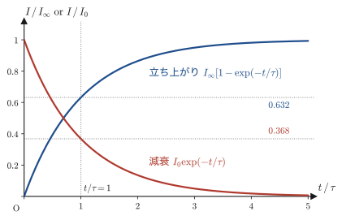
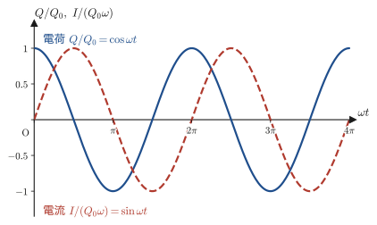
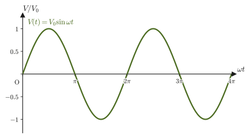

第40章電磁誘導とインダクタンス
自転車のライトは，タイヤの回転でダイナモの中の磁石を回すだけで光る．電車の改札の IC カードは，電池を積んでいないのにカードリーダーに近づけるだけで反応する．IH（電磁誘導加熱）調理器は，コイルに交流電流を流すだけで鍋そのものを発熱させる．発電所でつくられた電気は，変圧器で電圧を上げ下げされながら家庭まで届く．これらはすべて，同じ一つの現象——磁場（磁束）が変化すると，そこに電流を流そうとする起電力が生じる——を利用している．高校物理では，この現象を「コイルを貫く磁束が変化すると誘導起電力が生じる」というレンツの法則・ファラデーの法則として，公式の形で学んだはずである．この章では，その現象をもう一段深く掘り下げ，電場と磁場そのものの関係を表す方程式（マクスウェル方程式の一つ）として導出する．
これまでの章では，電場は静止した電荷が，磁場は定常的に流れる電流がつくるものとして，互いに独立に扱ってきた（第35章〜第39章）．ところが電磁誘導は，時間的に変化する磁場が電場を生み出すことを示している——電場と磁場は独立な二つの場ではなく，互いに絡み合った一つの「電磁場」の異なる側面なのである．この見方は，第58章で学ぶ特殊相対性理論に基づく電磁気学の定式化で，さらに徹底されることになる．
電磁誘導の物理を理解したら，それを応用する回路素子として，コイル自身に生じる起電力（自己インダクタンス）と，二つのコイルの間の起電力（相互インダクタンス）を導入する．コイルには磁場の形でエネルギーが蓄えられており，抵抗とコイルからなる RL 回路には指数関数的な過渡現象が，コイルとコンデンサーからなる LC 回路には——なんと第7章で学んだばね振り子とまったく同じ数学に従う——電気振動が現れる．最後に，電磁誘導の代表的な応用である発電機と変圧器のしくみを見て，この章を締めくくる．
- 電磁誘導の発見（ファラデー）と，磁束の変化の向きから誘導電流の向きを決めるレンツの法則の使い方（磁石とコイルの4通りの場合分け）
- ファラデーの電磁誘導の法則 $V=-N\dfrac{\dd\Phi}{\dd t}$ を，起電力の線積分 $\oint_C$（閉曲線 $C$ を1周する線積分）・磁束の面積分とストークスの定理から，微分形 $\rot\bm E=-\pdiff{\bm B}{t}$（マクスウェル方程式の一つ．$\pdiff{\bm B}{t}$ は，位置を固定して時刻 $t$ だけで $\bm B$ を微分する偏微分）まで導く手順，および変化する磁場がつくる誘導電場の計算
- 一様な磁場を横切る導体棒に生じる誘導起電力を，「掃過面積による磁束の変化」と「自由電子にはたらくローレンツ力」という二つの独立な立場から導出し，同じ結果 $V=vB\ell$ に一致することの確認，および動く棒にはたらく制動力とエネルギーの収支
- 自己インダクタンス $L$（ソレノイドを例に）と相互インダクタンス $M$ の定義・計算，コイルに蓄えられるエネルギー $\frac12LI^2$ と磁場のエネルギー密度 $B^2/(2\mu_0)$ の対応
- RL 回路の過渡現象（電流の指数関数的な立ち上がり・減衰）と，LC 回路の電気振動（単振動の運動方程式との数学的な対応）
- 発電機（交流起電力の発生と実効値）と変圧器（巻数比による電圧変換）の動作原理
もとにしたノート：望月泰英『物理学ノート 電磁気学』 pp. 27–29（p.30 は白紙）．
40.1 電磁誘導の発見とレンツの法則
第38章では，電流が流れればその周りに磁場が生じることを学んだ（ビオ＝サバールの法則，アンペールの法則）．ここで，イギリスの物理学者ファラデー（Michael Faraday）は，逆の問いを立てた——「磁場（磁束）が電流をつくるのではないか？」．1831年，ファラデーは鉄の環に2つのコイルを巻き，一方のコイルにつないだ電池のスイッチを入れた瞬間と切った瞬間にだけ，もう一方のコイルにつないだ検流計の針が振れることを見いだした．電流が変化するときだけ反応が現れ，一定の電流が流れ続けているときには何も起こらないのである．コイルに近づけた磁石を動かす方法でも同じ現象が起こる．このように，磁束の変化をつくり出すとコイルに電流が流れる現象を電磁誘導（electromagnetic induction）といい，このとき生じる電流を誘導電流（induced current），電流を流そうとするはたらきを誘導起電力（induced electromotive force）という．
定義40.1 電磁誘導・誘導電流・誘導起電力
回路を貫く磁束 $\Phi$（第38章で定義した，磁束密度 $\bm B$ を回路が囲む面 $S$ にわたって面積分した量 $\Phi=\iint_S\bm B\cdot\bm n\,\dd S$）が時間的に変化するとき，その回路に起電力が生じ，回路が閉じていれば電流が流れる．この現象を電磁誘導といい，生じる電流を誘導電流，生じる起電力を誘導起電力という．誘導起電力は，これまでの章で電位差（電圧）に使ってきたのと同じ記号 $V\ [\mathrm{V}]$ で表す（起電力と電位差は物理的には異なる概念だが，どちらを指すかは文脈で判断できるので，同じ文字を使う．第37章の電池の起電力 $\mathcal E$ と同じ種類の量を，本章では電圧と続けて読めるように $V$ と書く）．
では，誘導電流はどちら向きに流れるのだろうか．これを決めるのが，次のレンツ（Lenz）の法則である．
法則40.1 レンツの法則
コイルを貫く磁束が外部から変化を受けると，その変化を打ち消すような向きに誘導起電力が生じ，誘導電流が流れる．
レンツの法則は「磁束の変化を打ち消す向き」という言葉だけで覚えると符号を間違えやすいので，具体的な状況で毎回，図を描いて確認する習慣をつけるとよい．棒磁石をコイルに近づけたり遠ざけたりする，もっとも基本的な4通りの場合を順に見ていこう．以下では，図の左から磁石が近づくものとし，電流の回る向きは「磁石の側（コイルの左側）から見て」時計回りか反時計回りかで言い表す．図中でコイルの太線は手前側，細い灰色の線は奥側の導線を表す．
向きを確かめるときの道具は右ねじの法則（第38章）である．「電流の向きに右ねじを回すと，ねじの進む向きが電流のつくる磁場の向き」——磁場が左向きなら，左側から見て（磁場が自分に向かってくるので）電流は反時計回りに流れる．
40.1.1 (i) N極の磁石がコイルに近づくとき
コイルを貫く磁束は，磁石のN極側からコイルへ向かう向き（図40.1の右向き）に，しだいに増加する．レンツの法則により，コイルはこの増加を打ち消そう——すなわち，右向きの磁束を減らそうとする．そのためには，コイル自身が左向きの磁場をつくるように誘導電流が流れればよい．右ねじの法則より，左向きの磁場をつくる電流は，磁石の側から見て反時計回りであり，コイルの手前側（図の太線）では上向きに流れる．
40.1.2 (ii) N極の磁石がコイルから遠ざかるとき
今度はコイルを貫く右向きの磁束が，しだいに減少する．レンツの法則により，コイルはこの減少を打ち消そう——すなわち，右向きの磁束を増やそうとする．そのためには，コイル自身が右向きの磁場をつくるように誘導電流が流れればよい．これは，図40.1とはちょうど逆向き——磁石の側から見て時計回り（手前側では下向き）——の誘導電流である．
40.1.3 (iii) S極の磁石がコイルに近づくとき
S極がコイルに向いているとき，磁力線はS極に吸い込まれるので，コイルを貫く磁場（磁束）は磁石の側，すなわち左向きである（図40.2の赤矢印）．磁石が近づくにつれて，この左向きの磁束は増加する．レンツの法則により，コイルはこの増加を打ち消そう——すなわち，右向きの磁場をつくって左向きの磁束の増加を弱めよう——とする．右向きの磁場をつくる電流は，磁石の側から見て時計回り（手前側では下向き）であり，図40.2のように流れる．
40.1.4 (iv) S極の磁石がコイルから遠ざかるとき
この場合，コイルを貫く左向きの磁束は，しだいに減少する．レンツの法則により，コイルはこの減少を打ち消そう——すなわち，左向きの磁場をつくって左向きの磁束を増やそう——とする．したがって，誘導電流の向きは図40.2とはちょうど逆向き（磁石の側から見て反時計回り）になり，(i) の場合（図40.1）と同じ向きの電流が流れる．まとめると，「磁石が近づくとき」と「磁石が遠ざかるとき」とでは，同じ極を向けていても誘導電流の向きは互いに逆になり，さらに「N極を向けたとき」と「S極を向けたとき」とでも互いに逆になる——結局，(i)と(iv)が同じ向き，(ii)と(iii)が同じ向き（(i)とは逆向き）の誘導電流になる．4通りをまとめて図40.3と表40.1に示す．
| 場合 | 磁束の向き | 磁束の変化 | つくるべき磁場 | 誘導電流（磁石の側から見て） |
|---|---|---|---|---|
| (i) N極が近づく | 右向き | 増加 | 左向き | 反時計回り |
| (ii) N極が遠ざかる | 右向き | 減少 | 右向き | 時計回り |
| (iii) S極が近づく | 左向き | 増加 | 右向き | 時計回り |
| (iv) S極が遠ざかる | 左向き | 減少 | 左向き | 反時計回り |
注意：4通りの場合を混同しないために
レンツの法則を適用するときは，(1) 磁束の向き（磁石のどちらの極がコイルを向いているか）と，(2) 磁束が増加しているか減少しているか（磁石が近づいているか遠ざかっているか）の，2つの独立な要素を順番に確認するとよい．どちらか一方だけを見て「近づくときはいつも同じ向きの電流が流れる」のように覚えてしまうと，(iii)・(iv) のようにS極が絡む場合に符号を間違えやすい．
イメージ：なぜ「変化を打ち消す向き」でなければならないのか
もしレンツの法則が逆——磁束の変化を助長する向きに誘導電流が流れる——だったらどうなるだろうか．たとえば(i)の場合，磁石を近づけるほど誘導電流のつくる磁場が磁束の増加を後押しし，誘導電流はますます強くなる．誘導電流が流れるコイルは電磁石になっているから，磁石を引き寄せる向きの力がはたらき，磁石はひとりでに加速してコイルに吸い込まれてしまう．これは外部から何もエネルギーを与えていないのに運動エネルギーと電流のジュール熱が際限なく増え続けることを意味し，エネルギー保存則に反する．レンツの法則が「変化を打ち消す向き」でなければならない理由は，つまるところこのエネルギー保存則にある（この点は演習40.6で自分の言葉で説明してみよう）．
応用：渦電流制動（電磁ブレーキ）とIH調理器
レンツの法則は，コイルのような閉回路がなくても，導体そのものの内部に成り立つ．導体の板や円板を磁場の中で動かすと，導体内部に磁束の変化を打ち消そうとする局所的な誘導電流——渦電流（eddy current）——が生じる．この渦電流と磁場の相互作用（第39章のアンペール力）は，つねに導体の運動を妨げる向きにはたらく．これを利用したのが，ジェットコースターや鉄道の非接触ブレーキ，電子天秤の制動装置などに使われる電磁ブレーキである．摩擦を使わないので部品が摩耗せず，速度が大きいほど渦電流も大きくなって制動力が強くなるという特徴がある（この「速度に比例」の理由は例題40.1と演習40.8で確かめる）．
渦電流のもう一つの身近な応用がIH（誘導加熱）調理器である．調理器の中のコイルに交流電流を流すと，コイルがつくる磁場が向きを変えながら時間変化し，その上に置かれた金属の鍋の底に渦電流が誘導される．鍋自身の電気抵抗で渦電流がジュール熱（第37章37.4節）を発生するので，火を使わずに鍋そのものが発熱する．
例題40.1 磁石を導体パイプの中に落とす
アルミニウムのように電気を通すが磁石にはくっつかない金属でできた，鉛直に立てたパイプの中に，小さな棒磁石（質量 $m$）を静かに落とす．この磁石は，同じ形・同じ質量の，磁石でない金属の棒をパイプの中で自由落下させた場合と比べて，落下にかかる時間が長くなる．(1) この理由をレンツの法則から定性的に説明せよ．(2) 磁石の速さ $v$ に対して制動力が $F=\gamma v$（$\gamma$ は正の定数）と書けるとして，磁石の速さの時間変化 $v(t)$ と終端速度を求めよ．
解答 (1) 磁石がパイプの中を落下すると，磁石の近くのパイプの壁を貫く磁束が時々刻々変化する（磁石が近づいてくる部分では増加，遠ざかっていく部分では減少）．パイプは導体なので，この磁束の変化を打ち消す向きに，パイプの壁の中に渦電流が誘導される（本節の応用「渦電流制動」）．レンツの法則により，この渦電流のつくる磁場は，磁束を変化させている原因——磁石の落下運動——を妨げる向きにはたらく．すなわち，渦電流は磁石に上向きの力 $F$ を及ぼし，磁石を減速させる．（作用・反作用の法則により，パイプの壁は磁石から下向きの力を受ける．）磁石でない金属の棒ではパイプの壁を貫く磁束が変化しないので渦電流が生じず，自由落下する．したがって磁石のほうが遅く落下する．
(2) 磁石の速さを $v$ とすると，パイプの壁を貫く磁束の変化率 $\dd\Phi/\dd t$ は $v$ に比例し，ファラデーの法則（次節の法則40.2）から誘導起電力も $v$ に比例する．パイプの抵抗は一定なので，オームの法則により渦電流も $v$ に比例し，渦電流が磁石から受ける（磁石が渦電流から受ける）磁気力の大きさも $v$ に比例する．これが $F=\gamma v$ である．下向きを正として，磁石の運動方程式は
$$ m\diff{v}{t}=mg-\gamma v $$これは，速度に比例する空気抵抗がある落下（第5章5.2節）と同じ形の1階線形微分方程式である．右辺が0になる一定の速さ $v_{\mathrm t}=mg/\gamma$ を選んで $w=v-v_{\mathrm t}$ とおくと，$m\,\dd w/\dd t=mg-\gamma(w+v_{\mathrm t})=-\gamma w$ となり，$w=w(0)\exp(-\gamma t/m)$ と解ける．初期条件 $v(0)=0$ より $w(0)=-v_{\mathrm t}$ だから，
$$ v(t)=\frac{mg}{\gamma}\left[1-\exp\left(-\frac{\gamma t}{m}\right)\right] $$となる．$t\to\infty$ で $v\to v_{\mathrm t}=mg/\gamma$（終端速度）であり，重力と制動力が釣り合って一定の速さで落ちる．また，運動方程式より $\dd v/\dd t=g-\gamma v/m\lt g$ なので，どの時刻でも $v(t)\lt gt$ となり，自由落下より落下に時間がかかることが式でも確かめられる．この時定数 $m/\gamma$ をもつ指数関数の形は，40.8節のRL回路の電流の立ち上がりとまったく同じ形である．
40.2 ファラデーの電磁誘導の法則 — 積分形から微分形へ
前節のレンツの法則は，誘導電流の向きを教えてくれるが，誘導起電力の大きさまでは教えてくれない．これを定量的に与えるのが，ファラデーの電磁誘導の法則である．
法則40.2 ファラデーの電磁誘導の法則
1巻きの回路を貫く磁束を $\Phi\ [\mathrm{Wb}]$（ウェーバ）とすると，回路に生じる誘導起電力 $V$ は，
\begin{equation} V=-\diff{\Phi}{t} \label{eq:40-faraday-1turn} \end{equation}で与えられる．回路が $N$ 回巻かれたコイルであれば，各巻きに同じ磁束 $\Phi$ が貫くとして，$N$個の起電力が直列につながっているのと同じことになるから，全体の起電力は $N$ 倍になり，
\begin{equation} V=-N\diff{\Phi}{t} \label{eq:40-faraday-Nturn} \end{equation}となる．負号は，レンツの法則（磁束の増加に対しては減らす向き，減少に対しては増やす向きの起電力が生じること）を式の中に取り込んだものである——符号の意味は次段落で正確に述べる．
式\eqref{eq:40-faraday-1turn}の負号を正しく使うには，$\Phi$ の正の向き（面 $S$ の法線 $\bm n$ の向き）と，起電力 $V$（したがって誘導電流）の正の向きの取り方を，あらかじめ右ねじの法則で連動させて決めておく必要がある：回路を一周する向き（$C$ の正の向き）に右手の指を巻きつけたとき，親指が向く向きを面 $S$ の法線 $\bm n$ の正の向きとする．たとえば図40.1のコイルで，誘導電流 $I$ の向き（磁石の側から見て反時計回り）に沿って右手を巻きつけると，親指はコイルの左向きを指す——これはちょうど，誘導電流のつくる磁場が磁石の磁束の増加を打ち消す向きと一致している．このように向きを決めておけば，式\eqref{eq:40-faraday-1turn}・\eqref{eq:40-faraday-Nturn}の負号だけで，レンツの法則がすでに正しく表現されている（向きをいちいち図で確認しなくても，式の符号だけで誘導電流の向きが決まる，というのが法則40.2の強みである）．
例題40.2 磁束変化から誘導起電力を計算する
巻数 $N=200$ 回のコイルを貫く磁束が，$\Delta t=0.050\ \mathrm{s}$ の間に $\Phi_1=2.0\times10^{-4}\ \mathrm{Wb}$ から $\Phi_2=6.0\times10^{-4}\ \mathrm{Wb}$ まで一定の割合で増加した．この間にコイルに生じる誘導起電力の大きさを求めよ．
解答 磁束が一定の割合で変化しているので，$\dd\Phi/\dd t$ は定数であり，平均変化率で置き換えられる：
$$ \diff{\Phi}{t}=\frac{\Phi_2-\Phi_1}{\Delta t}=\frac{6.0\times10^{-4}-2.0\times10^{-4}}{0.050}\ \mathrm{Wb/s}=\frac{4.0\times10^{-4}}{0.050}\ \mathrm{Wb/s}=8.0\times10^{-3}\ \mathrm{Wb/s} $$式\eqref{eq:40-faraday-Nturn}（大きさだけを求めるので符号は省く）より，
$$ \abs{V}=N\abs{\diff{\Phi}{t}}=200\times8.0\times10^{-3}\ \mathrm{Wb/s}=1.6\ \mathrm{V} $$（$1\ \mathrm{Wb/s}=1\ \mathrm{V}$ であることは，式\eqref{eq:40-faraday-1turn}自体が定義する単位の関係である）．
ここからは，式\eqref{eq:40-faraday-1turn}を，電場・磁場という「場」そのものの関係式（マクスウェル方程式の1つ）へと書き換えていこう．ただし，この節では回路（およびそれが囲む面 $S$）が空間に固定されて動かない場合を考える（動く回路の場合は次の節で扱う）．
まず，誘導起電力 $V$ を電場 $\bm E$ で表そう．電場 $\bm E$ は，回路の導線の中だけにあるものではなく，導線がなくても空間の各点にある場である．閉曲線 $C$ に沿って単位電荷（$1\ \mathrm C$）を1周させるとき，電場がその電荷にする仕事が誘導起電力 $V$ である（単位は $\mathrm{J/C}=\mathrm V$）．これを，電場の $C$ に沿った線積分（接線線積分，大学数学 第20章 20.2節）として，
\begin{equation} V=\oint_C\bm E\cdot\dd\bm l \label{eq:40-emf-line-integral} \end{equation}と書く（$\oint_C$ は閉曲線 $C$ を1周する線積分．$\dd\bm l=\hat{\bm t}\,\dd\ell$ は，閉曲線 $C$ の正の向きの接線単位ベクトル $\hat{\bm t}$ と，弧長要素 $\dd\ell$ の積であるベクトル線要素）．一方，磁束 $\Phi$ は，磁束密度 $\bm B$ の，$C$ を境界とする面 $S$ 上での面積分（第38章で導入済み）として，
\begin{equation} \Phi=\iint_S\bm B\cdot\bm n\,\dd S \label{eq:40-flux-surface-integral} \end{equation}と書ける．
数学の道具：ストークスの定理
閉曲線 $C$ を境界とする（向きのそろった）曲面 $S$ 上で，ベクトル場 $\bm f$ について，
$$ \oint_C\bm f\cdot\dd\bm l=\iint_S(\operatorname{rot}\bm f)\cdot\bm n\,\dd S $$が成り立つ（大学数学 第20章 20.5節 定理20.3）．回転 $\operatorname{rot}\bm f$（大学数学 第19章 19.4節）は「その点のまわりで $\bm f$ がどれだけ渦を巻いているか」を表すベクトル量であり，ストークスの定理は「面を微小な網の目に分割し，各網の目のまわりの微小な循環（渦の強さ）をすべて足し合わせると，内部で共有される辺での寄与は互いに打ち消し合い，外側の境界 $C$ に沿った正味の循環だけが残る」という，第35章35.3節の発散定理とよく似た「局所と大域をつなぐ」定理である．
式\eqref{eq:40-emf-line-integral}の左辺にストークスの定理を適用すると，
\begin{equation} \oint_C\bm E\cdot\dd\bm l=\iint_S(\operatorname{rot}\bm E)\cdot\bm n\,\dd S \label{eq:40-stokes-applied} \end{equation}が成り立つ．また，式\eqref{eq:40-flux-surface-integral}を時間で微分すると（面 $S$ 自体は動かさず固定して考えているので，時間微分は積分の中に入れられる．このとき $\bm B$ は位置 $(x,y,z)$ と時刻 $t$ の関数なので，位置を固定して時刻 $t$ だけで微分する偏微分 $\pdiff{\bm B}{t}$ になる．大学数学 第6章 6.2節），
\begin{equation} \diff{\Phi}{t}=\iint_S\pdiff{\bm B}{t}\cdot\bm n\,\dd S \label{eq:40-flux-time-derivative} \end{equation}となる．式\eqref{eq:40-emf-line-integral}・\eqref{eq:40-flux-surface-integral}を式\eqref{eq:40-faraday-1turn}に代入し，さらに式\eqref{eq:40-stokes-applied}・\eqref{eq:40-flux-time-derivative}を使って両辺を書き換えると，
$$ \iint_S(\operatorname{rot}\bm E)\cdot\bm n\,\dd S=-\iint_S\pdiff{\bm B}{t}\cdot\bm n\,\dd S \qquad\text{すなわち}\qquad \iint_S\left(\operatorname{rot}\bm E+\pdiff{\bm B}{t}\right)\cdot\bm n\,\dd S=0 $$が得られる．この関係は，$C$（したがって $S$）をどのように選んでも成り立つ——つまり，空間のどんな小さな閉曲線を選んでも成り立つ．第35章35.3節で発散定理から $\operatorname{div}\bm E=\rho/\varepsilon_0$（局所的な式）を導いたときとまったく同じ論法で，面 $S$ をある1点のまわりに限りなく小さく縮めていくと，被積分関数（の $\bm n$ 方向成分）自身が恒等的に0でなければならないことになる．したがって，
\begin{equation} \operatorname{rot}\bm E=-\pdiff{\bm B}{t} \label{eq:40-faraday-differential} \end{equation}という，空間の各点で成り立つ局所的な関係式が得られる．
法則40.3 ファラデーの電磁誘導の法則（微分形．マクスウェル方程式 No.2）
静止した回路のまわりの空間の各点で，電場 $\bm E$ と磁束密度 $\bm B$ は，
$$ \operatorname{rot}\bm E=-\pdiff{\bm B}{t} $$を満たす．これがマクスウェル方程式の2番目の式である（No.1 は第35章のガウスの法則 $\operatorname{div}\bm D=\rho$）．
イメージ：式\eqref{eq:40-faraday-differential}が意味すること
第35章で見た $\operatorname{div}\bm E=\rho/\varepsilon_0$ は「電場の湧き出し口は電荷である」という主張だった．式\eqref{eq:40-faraday-differential}はそれとまったく異なる種類の主張をしている——「電場が渦を巻く（$\operatorname{rot}\bm E\neq\bm 0$）のは，そこで磁場が時間変化しているときだけである」．静電場（第35章・第36章）はつねに $\operatorname{rot}\bm E=\bm 0$（保存力場．電位 $\varphi$ が定義できたのはこのおかげである）だったが，磁場が時間変化する状況では，電場はもはや保存力場ではなく，閉曲線に沿って1周する間に正味の仕事をする——それこそが誘導起電力の正体である．
例題40.3 一様に変化する磁場がつくる誘導電場
紙面に垂直な軸を中心とする半径 $a$ の円柱状の領域の内部に，紙面の手前向きの一様な磁場 $\bm B(t)$ があり（図40.4），領域の外には磁場がない．$B$ が一定の割合 $\dd B/\dd t\gt0$ で増加するとき，中心から距離 $r$ の点における誘導電場の大きさ $E$ を，(1) $r\lt a$，(2) $r\gt a$ の場合について求めよ．また (3) $a=0.10\ \mathrm m$，$\dd B/\dd t=0.50\ \mathrm{T/s}$ として，$r=0.050\ \mathrm m$ と $r=0.40\ \mathrm m$ での $E$ の大きさを求めよ．
解答 対称性から，誘導電場は中心を軸とする円周の接線方向を向き，その大きさ $E_\phi$ は中心からの距離 $r$ だけで決まると考えられる．そこで，中心を中心とする半径 $r$ の円周 $C$ に対してファラデーの法則（式\eqref{eq:40-faraday-1turn}）を適用する．$C$ の正の向きを反時計回り（面 $S$ の法線は手前向き）とする．左辺は，円周に沿って $E_\phi$ が一定なので，
$$ V=\oint_C\bm E\cdot\dd\bm l=E_\phi\cdot2\pi r $$(1) $r\lt a$ のとき，円周が囲む円板全体を磁場が貫くので $\Phi=B\cdot\pi r^2$ であり，
$$ 2\pi rE_\phi=-\diff{}{t}\left(\pi r^2B\right)=-\pi r^2\diff{B}{t} \qquad\therefore\ E_\phi=-\frac r2\diff{B}{t} $$負号は，$\dd B/\dd t\gt0$ のとき $E_\phi\lt0$，すなわち電場が時計回りを向くことを表す（レンツの法則：手前向きの磁束の増加を打ち消すには，向こう向きの磁場をつくる時計回りの電流が必要）．大きさは $E=\dfrac r2\abs{\dd B/\dd t}$ で，中心からの距離に比例する．
(2) $r\gt a$ のとき，磁場が貫くのは半径 $a$ の円板だけなので $\Phi=B\cdot\pi a^2$ であり，
$$ 2\pi rE_\phi=-\pi a^2\diff{B}{t} \qquad\therefore\ E_\phi=-\frac{a^2}{2r}\diff{B}{t} $$大きさは $E=\dfrac{a^2}{2r}\abs{\dd B/\dd t}$ で，磁場のない領域にも，距離に反比例する誘導電場がある．（円周 $r=a$ で (1)(2) の値は一致する．）
(3) $r=0.050\ \mathrm m$（$\lt a$）では，
$$ E=\frac{0.050}{2}\times0.50\ \mathrm{V/m}=1.25\times10^{-2}\ \mathrm{V/m} $$$r=0.40\ \mathrm m$（$\gt a$）では，
$$ E=\frac{0.10^2}{2\times0.40}\times0.50\ \mathrm{V/m}=6.25\times10^{-3}\ \mathrm{V/m} $$単位は $\mathrm{T/s}\times\mathrm m=\mathrm{V/m}$（$1\ \mathrm T=1\ \mathrm{V\,s/m^2}$ より）で電場の単位に一致する．なお，(1)(2) の $E_\phi$ を微分形 $\operatorname{rot}\bm E=-\partial\bm B/\partial t$ に代入しても成り立つことは，円柱座標での回転の公式 $(\operatorname{rot}\bm E)_z=\dfrac1r\dfrac{\partial(rE_\phi)}{\partial r}$ で確かめられる（内側では $rE_\phi=-r^2\dot B/2$ で $(\operatorname{rot}\bm E)_z=-\dot B$，外側では $rE_\phi$ が定数で $(\operatorname{rot}\bm E)_z=0$）．
導体の輪をこの領域のまわりに置けば，この電場が誘導電流を流す．この電場は，IH調理器の鍋に渦電流を流し，また電子を円軌道に沿って加速するベータトロンという装置のはたらきの根拠にもなっている．
40.3 磁場を横切る導体棒に生じる誘導起電力
ここまでは，磁石を動かして磁束を変化させる場合を考えてきた．今度は逆に，磁場は空間に固定したまま，回路の一部（導線）を動かすことで磁束を変化させる，重要な場合を考える．
考察：動く回路の起電力——起電力の一般形
回路の導線が速度 $\bm v$ で動くと，導線の中の荷電粒子（電荷 $q$）には，電場による力 $q\bm E$ に加えて，磁場からのローレンツ力 $q\bm v\times\bm B$（第39章）がはたらく．単位電荷あたりにはたらく力は $\bm E+\bm v\times\bm B$ だから，回路を1周する間にこの力が単位電荷にする仕事，すなわち起電力は一般に
\begin{equation} V=\oint_C\left(\bm E+\bm v\times\bm B\right)\cdot\dd\bm l \label{eq:40-emf-general} \end{equation}と書ける．前節の $V=\oint_C\bm E\cdot\dd\bm l$ は，回路が静止している（$\bm v=\bm 0$）特別な場合であり，微分形 $\operatorname{rot}\bm E=-\partial\bm B/\partial t$ もこの「静止した回路」に対する関係式である．一方，この節のように磁場が時間変化せず回路（の一部）が動く場合は，$\operatorname{rot}\bm E=\bm 0$ なので $\oint_C\bm E\cdot\dd\bm l=0$ となり，起電力は第2項 $\oint_C(\bm v\times\bm B)\cdot\dd\bm l$ だけから生じる．どちらの場合でも，法則40.2 の $V=-\dd\Phi/\dd t$ は（磁束の変化の原因が磁場の変化であれ，回路の運動であれ）成り立つ．
図40.5のように，一様な磁束密度 $B\ [\mathrm{Wb/m^2}]$（$=\mathrm{T}$，テスラ．紙面の裏から表（手前）へ向かう向きに一様に分布しているとする．図の丸の中の点 ⊙ がその記号）の中に，コの字形に固定した導線（左端に抵抗 $R$ を挟んだ辺 $ab$，上側のレール，下側のレール）を置き，レールの上に，レールと垂直に導体棒 $PQ$（$P$ は下のレール上，$Q$ は上のレール上）を渡す．この導体棒 $PQ$ を，レールに沿って一定の速さ $v$ で右へなめらかに滑らせる．
導出：動く導体棒に生じる起電力 $V=-vB\ell$
まず正の向きを決める．面 $S$ の法線 $\bm n$ を $\bm B$ の向き（紙面の手前向き）にとると，右ねじの法則により回路 $C$ の正の向きは反時計回りである．
導体棒 $PQ$ は $\Delta t$ 秒間に，速さ $v$ で距離 $v\,\Delta t$ だけ進む．このとき，回路（$abQP$ で囲まれた部分）の面積は，導体棒が掃いた分だけ増える．棒の長さを $\ell$ とすると，掃いた面積（図40.5の色を付けた部分）は，縦 $\ell$，横 $v\,\Delta t$ の長方形の面積として，
$$ \Delta S=\ell\,v\,\Delta t $$である．磁束密度 $B$ は一様（場所によらず同じ値）なので，この面積の増加にともなって新たに貫くようになった磁束の増加分は，
\begin{equation} \Delta\Phi=B\,\Delta S=B\ell v\,\Delta t \label{eq:40-motional-dphi} \end{equation}である．式\eqref{eq:40-faraday-1turn}（1巻きの回路のファラデーの法則）の $\dd\Phi/\dd t$ を，微小時間 $\Delta t$ での平均変化率 $\Delta\Phi/\Delta t$ で置き換えて式\eqref{eq:40-motional-dphi}を代入すると，
\begin{equation} V=-\diff{\Phi}{t}\approx-\frac{\Delta\Phi}{\Delta t}=-\frac{B\ell v\,\Delta t}{\Delta t}=-vB\ell \label{eq:40-motional-emf} \end{equation}となる（$\Delta t\to0$ の極限でも $\Delta\Phi/\Delta t$ は同じ一定値 $B\ell v$ に等しいので，この式は近似ではなく厳密に成り立つ）．負号は，反時計回りを正としたとき $V\lt0$，すなわち実際の誘導電流は時計回りに流れることを表している（図40.5の青矢印．手前向きの磁束の増加を打ち消すには，向こう向きの磁場をつくる時計回りの電流が必要である）．
（導出終わり）
公式40.1 動く導体棒の起電力（起電力の大きさ）
一様な磁束密度 $B$ に垂直な平面内を，磁場と導体棒の両方に垂直な向きに速さ $v$ で動く，長さ $\ell$ の導体棒に生じる誘導起電力の大きさは，
\begin{equation} \abs{V}=vB\ell \label{eq:40-motional-emf-magnitude} \end{equation}である．単位を確認すると，$[v][B][\ell]=(\mathrm{m/s})(\mathrm{Wb/m^2})(\mathrm{m})=\mathrm{Wb/s}=\mathrm V$ となり，たしかに電圧の単位になっている．一般には，棒の各点の速度が $\bm v$ のとき $V=\int_P^Q(\bm v\times\bm B)\cdot\dd\bm l$（式\eqref{eq:40-emf-general}の第2項）であり，棒が $\bm B$ に垂直で，速度 $\bm v$（$\bm B$ に垂直）が棒と角 $\theta$ をなすときの大きさは $vB\ell\sin\theta$ となる（上の結果は $\theta=90^\circ$ の場合）．
例題40.4 すべり棒に生じる起電力の数値計算
磁束密度 $B=0.40\ \mathrm T$ の一様な磁場に垂直な2本のレール（間隔 $\ell=0.25\ \mathrm m$）の上を，導体棒が一定の速さ $v=3.0\ \mathrm{m/s}$ で滑っている．この導体棒に生じる誘導起電力の大きさを求めよ．
解答 式\eqref{eq:40-motional-emf-magnitude}に数値を代入するだけでよい：
$$ \abs{V}=vB\ell=3.0\ \mathrm{m/s}\times0.40\ \mathrm{T}\times0.25\ \mathrm m=0.30\ \mathrm V $$例題40.5 すべり棒にはたらく力と外力の仕事率
例題40.4のレール（$B=0.40\ \mathrm T$，$\ell=0.25\ \mathrm m$）の左端に抵抗 $R=0.10\ \Omega$ をつなぎ（棒とレールの電気抵抗は無視できるとする），導体棒を一定の速さ $v=3.0\ \mathrm{m/s}$ で滑らせ続ける．(1) 回路を流れる電流 $I$ を求めよ．(2) 棒が磁場から受ける力の大きさ $F$ と向きを求めよ．(3) 棒を一定の速さで動かし続けるために外力がしなければならない仕事率 $P$ を求め，抵抗で発生するジュール熱の仕事率 $I^2R$ と比較せよ．
解答 (1) 起電力は例題40.4より $V=vB\ell=0.30\ \mathrm V$ なので，オームの法則より
$$ I=\frac VR=\frac{0.30}{0.10}\ \mathrm A=3.0\ \mathrm A $$一般に $I=vB\ell/R$ である．
(2) 電流 $I$ が流れる長さ $\ell$ の棒は，磁場から第39章39.1節のアンペール力を受け，その大きさは，$\bm I\perp\bm B$ より
$$ F=IB\ell=3.0\times0.40\times0.25\ \mathrm N=0.30\ \mathrm N $$一般には $F=IB\ell=B^2\ell^2v/R$ で，速さ $v$ に比例する．向きは，棒の中の電流が $Q\to P$（下向き），$\bm B$ が手前向きなので，$\bm F=I\bm\ell\times\bm B$ は左向き，すなわち棒の運動と逆向き（運動を妨げる向き）である．これはレンツの法則の「変化を打ち消す向き」と一致する．
(3) 棒を一定の速さで動かすには，外力が $F$ と同じ大きさで右向きに棒を押す必要があるので，
$$ P=Fv=0.30\times3.0\ \mathrm W=0.90\ \mathrm W $$一方，抵抗で発生するジュール熱の仕事率は
$$ I^2R=3.0^2\times0.10\ \mathrm W=0.90\ \mathrm W $$となり，両者は一致する．外力がした仕事は，すべて抵抗のジュール熱に変わっている（一般に $Fv=B^2\ell^2v^2/R=I^2R$）．すなわちエネルギー保存則が成り立っており，これもレンツの法則の向きが逆ではありえない理由の一つである．
40.4 ローレンツ力からみた起電力
前節では，40.3節の現象を「磁束の変化」というマクロな量から説明した．しかし，なぜ導体棒を動かすとそもそも起電力が生じるのかを，導体の中を流れる自由電子1個1個の運動から見直すと，まったく違う，しかし同じ結論に至る説明ができる．
導体棒 $PQ$（40.3節と同じ設定．棒は速さ $v$ で右へ動き，一様な磁束密度 $B$ は紙面の手前向き）の中には，自由電子が無数に存在する．棒が速さ $v$ で動くとき，棒の中の自由電子（電荷 $-e$，$e$ は電気素量）も，棒といっしょに同じ速度 $\bm v$ で動いている．したがって電子は，第39章で学んだローレンツ力
$$ \bm f_B=(-e)\,\bm v\times\bm B $$を受ける．この力の向きを，座標を決めて実際に計算してみよう．$x$ 軸を右向き（棒の速度の向き），$y$ 軸を棒に沿って $P$ から $Q$ へ向かう向き，$z$ 軸を紙面の手前向き（$\bm B$ の向き）にとる（右手系）．すると $\bm v=v\,\bm e_x$，$\bm B=B\,\bm e_z$ であり，$\bm e_x\times\bm e_z=-\bm e_y$ だから，
$$ \bm v\times\bm B=vB\,(\bm e_x\times\bm e_z)=-vB\,\bm e_y,\qquad \bm f_B=(-e)(-vB\,\bm e_y)=+evB\,\bm e_y $$となる．$+\bm e_y$ は $Q$ の向きなので，電子は棒に沿って $Q$ の側へ押しやられる（図40.6上）．（電子は負電荷なので，正電荷ならば逆の $P$ の向きに押される．）
電子が $Q$ 側へ移動していくと，$Q$ 側の端には（動いてきた）電子が集まって負電荷が，$P$ 側の端には（電子が去った後に）正電荷が残る．これは，ちょうど平行板コンデンサー（第36章36.6節）の2枚の極板に電荷が溜まるのと同じ状況であり，棒の内部には $P$ から $Q$ へ向かう向きの電場 $\bm E$ が生じる．この電場は，棒の中に残っている自由電子に，こんどはクーロン力
$$ \bm f_E=(-e)\bm E $$を及ぼす．電荷が溜まるにつれて $\bm E$（したがって $\bm f_E$）は大きくなっていき，$\bm f_E$ は $\bm f_B$ とは逆向きなので，やがて2つの力がちょうど釣り合うところで電子の移動は止まる（それ以上電荷が移動しなくなり，定常状態に達する）．
導出：力の釣り合いから $V=vB\ell$ を導く
力の大きさだけに着目すると，ローレンツ力の大きさは $f_B=evB$（電子の速さは棒の速さ $v$ に等しく，$\bm v\perp\bm B$ なので $\abs{\bm v\times\bm B}=vB$），クーロン力の大きさは $f_E=eE$ である．釣り合いの条件 $f_E=f_B$ より，
$$ eE=evB\qquad\therefore\ E=vB $$が定常状態での棒の内部の電場の大きさである．一様な電場 $E$ による2点間の電位差は（第36章36.2節）「電場の大きさ×距離」で与えられるから，棒の両端 $P,Q$（間隔 $\ell$）の間の電位差，すなわち導体棒に生じる起電力は，
\begin{equation} V=E\ell=vB\ell \label{eq:40-motional-emf-lorentz} \end{equation}となる．
（導出終わり）
式\eqref{eq:40-motional-emf-lorentz}は，前節で磁束の変化から求めた式\eqref{eq:40-motional-emf}（大きさは式\eqref{eq:40-motional-emf-magnitude}）の $\abs{V}=vB\ell$ と完全に一致する．
閉回路につないだとき．上の議論は，棒が回路につながっていない（開いている）場合のものであった．図40.5のように棒が閉回路の一部であるときは，電子は棒の端に溜まり続けることなく，回路を回り続ける．このとき棒の中では，ローレンツ力が電子を $Q$ の側へ押し続ける（電子が動く向きの力なので，これは電荷が溜まって生じる静電的な力ではなく，電荷を運び続ける非静電的な力である）．棒は，一定の起電力 $vB\ell$ をもつ電池のようにはたらく．電子が $Q$ 側へ押されるということは，正電荷（電流の向き）が棒の中を $Q\to P$ へ押されることであり，$P$ が高電位（電池の＋極）に，$Q$ が低電位（電池の−極）に相当する．外部の回路では電流は $P$ から流れ出し，下のレール，抵抗，上のレールを通って $Q$ へ戻る——これが図40.5の青矢印（時計回り）である．
イメージ：2つの説明はなぜ一致するのか——そして特殊相対性理論への伏線
40.3節の説明は「回路を貫く磁束が変化する」というマクロな見方，本節の説明は「棒の中の電子にはたらくローレンツ力」というミクロな見方であり，起電力の原因を2つの異なる立場から説明している．どちらも，レールに対して静止した観測者（実験室系）から見た計算であり，その結果が一致することは，法則40.2（磁束則）が式\eqref{eq:40-emf-general}の一般形を正しく表していることの確認になっている．
では，棒といっしょに動く観測者から見るとどうなるだろうか．この観測者から見ると，棒は静止しており，電子も（釣り合いに達したあと）静止している．それでも電子を $Q$ 側へ押す力がなければならないが，静止した電荷にはたらく磁気力はないので，この観測者には磁場のかわりに大きさ $vB$ の電場 $\bm E'=\bm v\times\bm B$ が現れているように見える．同じ現象が，一方の観測者には磁気力（ローレンツ力），他方の観測者には電気力（クーロン力）に見えるのである——これは，電場と磁場が絶対的に区別できるものではなく，観測者の運動状態（どの慣性系から見るか）によって互いに姿を変える，1つの電磁場の異なる側面であることを示唆している．この「見る立場によって $\bm E$ と $\bm B$ の役割が入れ替わる」という視点は，第58章で学ぶ，特殊相対性理論に基づく電磁気学の定式化で厳密に扱われる．
例題40.6 自由電子にはたらく力の釣り合い
磁束密度 $B=0.40\ \mathrm T$ の磁場を，速さ $v=3.0\ \mathrm{m/s}$ で横切る導体棒（例題40.4と同じ設定）の中の自由電子1個にはたらくローレンツ力の大きさ $f_B$ を求めよ．また，定常状態で棒の内部にできる電場の大きさ $E$ と，電子にはたらくクーロン力の大きさ $f_E$ を求め，$f_B=f_E$ となっていることを確かめよ．（電気素量 $e=1.602\times10^{-19}\ \mathrm C$．）
解答 ローレンツ力の大きさは，$\bm v\perp\bm B$ より
$$ f_B=evB=1.602\times10^{-19}\times3.0\times0.40=1.922\times10^{-19}\ \mathrm N\approx1.9\times10^{-19}\ \mathrm N $$定常状態の電場の大きさは，導出の結果 $E=vB$ より
$$ E=vB=3.0\times0.40=1.2\ \mathrm{V/m} $$このときのクーロン力の大きさは，
$$ f_E=eE=1.602\times10^{-19}\times1.2=1.922\times10^{-19}\ \mathrm N\approx1.9\times10^{-19}\ \mathrm N $$となり，$f_B=f_E$（有効数字の範囲で一致）である．力の釣り合いの式 $f_E=f_B$（すなわち $eE=evB$）は，両辺の $e$ が約分できて $E=vB$ となることからも分かるとおり，電荷の大きさ $e$ の値によらずに成り立つ関係である．
40.5 自己インダクタンス — ソレノイドを例に
ここからは，電磁誘導を応用した電気回路の基本要素として欠かせないインダクタンスを導入する．
コイルに電流 $I$ を流すと，第38章で学んだとおり，コイル自身がその電流によって磁場をつくり，コイル自身を磁束が貫く．もし電流 $I$ が時間的に変化すれば，コイルを貫くこの「自分自身がつくった磁束」も変化し，レンツの法則により，その変化を妨げる向きの誘導起電力がコイル自身に生じる．この現象を自己誘導（self-induction）という．
定義40.2 自己インダクタンス
$N$ 回巻きのコイルに電流 $I$ を流したとき，コイルの各巻きを貫く磁束を $\Phi$ とする．真空中で電流が2倍になれば磁束も2倍になるというように，$\Phi$ は $I$ に比例するので，比例定数を $L$ とおいて，
\begin{equation} N\Phi=LI \label{eq:40-inductance-def} \end{equation}と書く（$N\Phi$ は，コイルの各巻きを貫く磁束の総和で，鎖交磁束（flux linkage）という）．この比例定数 $L\ [\mathrm H]$（ヘンリー，henry）を，このコイルの自己インダクタンス（self-inductance）という．電流 $I$ が時間変化すると，式\eqref{eq:40-faraday-Nturn}と式\eqref{eq:40-inductance-def}より，コイル自身に生じる誘導起電力（自己誘導起電力）は，
\begin{equation} V_L=-N\diff{\Phi}{t}=-L\diff{I}{t} \label{eq:40-self-induced-emf} \end{equation}となる．単位は，式\eqref{eq:40-inductance-def}より $1\ \mathrm H=1\ \mathrm{Wb/A}$，あるいは式\eqref{eq:40-self-induced-emf}より $1\ \mathrm H=1\ \mathrm{V\!\cdot\! s/A}$ である（次元を確認すると，$(\mathrm{V})/(\mathrm{A/s})=\mathrm{V\,s/A}$ で一致する）．
注意：自己インダクタンスの符号の意味
式\eqref{eq:40-self-induced-emf}の負号は，レンツの法則そのものである——電流 $I$ が増えようとすれば（$\dd I/\dd t\gt0$），自己誘導起電力 $V_L$ はそれを妨げる向き（電流を減らそうとする向き）に生じ，逆に電流が減ろうとすれば，それを維持しようとする向きに生じる．コイルは電流の変化を「嫌う」——電流を急に変えにくくする部品だと考えるとよい（40.8節のRL回路で，この性質が過渡現象としてはっきり現れる）．
自己インダクタンスは，コイルの巻き方（形状）だけで決まる量であり，流れている電流の大きさにはよらない．これを，もっとも基本的な形——十分に長いソレノイド（図40.7）——について具体的に計算してみよう．
導出：ソレノイドの自己インダクタンス
長さ $\ell$，断面積 $S$，巻数 $N$（単位長さあたりの巻数 $n=N/\ell$）の十分に長いソレノイドに電流 $I$ を流すと，第38章のアンペールの法則の結果より，内部にはほぼ一様な磁束密度
$$ B=\mu_0nI=\mu_0\frac{N}{\ell}I $$ができる．コイルの1巻き（断面積 $S$ の円）を貫く磁束は，$B$ が断面内で一様なので，
$$ \Phi=BS=\mu_0\frac{N}{\ell}IS $$である．これを定義40.2の式\eqref{eq:40-inductance-def}（$N\Phi=LI$）に代入すると，
$$ N\Phi=N\cdot\mu_0\frac{N}{\ell}IS=\mu_0\frac{N^2S}{\ell}I=LI $$両辺を $I$（$\neq0$）で割ると，
\begin{equation} L=\mu_0\frac{N^2S}{\ell} \label{eq:40-solenoid-inductance} \end{equation}が得られる．たしかに，$L$ の中に電流 $I$ は残っておらず，コイルの形状（$N,S,\ell$）だけで決まる量になっている．単位も確認しておこう．$\mu_0$ の単位は $\mathrm{N/A^2}$，$N$ は無次元，$S/\ell$ は $\mathrm{m^2/m}=\mathrm m$ なので，$L$ の単位は $\mathrm{N\,m/A^2}=\mathrm{J/A^2}$ である．これは $1\ \mathrm H=1\ \mathrm{V\,s/A}=1\ \mathrm{J/A^2}$（$\mathrm{V}=\mathrm{J/C}$，$\mathrm C=\mathrm{A\,s}$ より）と一致する．
（導出終わり）
例題40.7 ソレノイドの自己インダクタンスと自己誘導起電力
巻数 $N=500$ 回，長さ $\ell=0.20\ \mathrm m$，断面積 $S=3.0\times10^{-4}\ \mathrm{m^2}$（半径約1cmの円に相当）のソレノイドがある．(1) 自己インダクタンス $L$ を求めよ．(2) このソレノイドに流れる電流が $0.10\ \mathrm s$ の間に $0$ から $2.0\ \mathrm A$ まで一定の割合で増加したとき，生じる自己誘導起電力の大きさを求めよ．（$\mu_0=4\pi\times10^{-7}\ \mathrm{N/A^2}$ を使う．CODATA 2018 の値 $1.256\,637\,062\,12\times10^{-6}\ \mathrm{N/A^2}$ との相対的な差は $10^{-9}$ 程度で，有効数字の範囲では影響しない．）
解答 (1) 式\eqref{eq:40-solenoid-inductance}に数値を代入すると，
$$ L=\mu_0\frac{N^2S}{\ell}=4\pi\times10^{-7}\times\frac{500^2\times3.0\times10^{-4}}{0.20}=4\pi\times10^{-7}\times3.75\times10^{2}\approx4.71\times10^{-4}\ \mathrm H\approx0.47\ \mathrm{mH} $$(2) 電流の変化率は $\dd I/\dd t\approx\Delta I/\Delta t=(2.0-0)/0.10=20\ \mathrm{A/s}$ で一定なので，式\eqref{eq:40-self-induced-emf}より，
$$ \abs{V_L}=L\abs{\diff{I}{t}}\approx4.71\times10^{-4}\ \mathrm H\times20\ \mathrm{A/s}\approx9.4\times10^{-3}\ \mathrm V\approx9.4\ \mathrm{mV} $$40.6 相互インダクタンス
コイルが2つあり，近くに置かれている場合を考える．片方のコイル（コイル1，巻数 $N_1$）に電流 $I_1$ を流すと，コイル1のつくる磁場の一部が，もう片方のコイル（コイル2，巻数 $N_2$）を貫く．この磁束をコイル2の側から見た磁束 $\Phi_{21}$ とすると，$\Phi_{21}$ もコイル1の電流 $I_1$ に比例するので，比例定数 $M_{21}$ を使って $N_2\Phi_{21}=M_{21}I_1$ と書ける．コイル1の電流 $I_1$ が変化すれば，コイル2には，自分自身には電流を流していないにもかかわらず，誘導起電力が生じる．この現象を相互誘導（mutual induction）という．
定義40.3 相互インダクタンス
コイル1（巻数 $N_1$）の電流 $I_1$ が，近くのコイル2（巻数 $N_2$）の各巻きを貫く磁束 $\Phi_{21}$ をつくるとき，
$$ N_2\Phi_{21}=M_{21}I_1 $$で定義される $M_{21}\ [\mathrm H]$ を，コイル1からコイル2への相互インダクタンス（mutual inductance）という．同様に，コイル2の電流 $I_2$ がコイル1につくる磁束から $M_{12}$（$N_1\Phi_{12}=M_{12}I_2$）を定義できる．コイル1の電流が変化すると，コイル2に生じる相互誘導起電力は，
\begin{equation} V_2=-N_2\diff{\Phi_{21}}{t}=-M_{21}\diff{I_1}{t} \label{eq:40-mutual-induced-emf} \end{equation}である（自己インダクタンスと同様，負号はレンツの法則を表す．$N_2\Phi_{21}$ はコイル2の鎖交磁束である）．
定理40.1 相互インダクタンスの相反性
2つのコイルの形と配置がどのようなものでも，
\begin{equation} M_{12}=M_{21}\equiv M \label{eq:40-mutual-reciprocity} \end{equation}が成り立つ．どちらのコイルに電流を流して考えても，同じ値 $M$ が得られる．
考察：なぜ $M_{12}=M_{21}$ なのか（エネルギーによる説明）
コイルに蓄えられるエネルギー（40.7節で導く $\frac12LI^2$）を使うと，この関係は次のように理解できる．2つのコイルの電流を $0$ から最終値 $I_1,I_2$ まで増やして，磁場のエネルギーを蓄える．蓄えられるエネルギーは最終状態（最終的な電流の値）だけで決まり，電流の増やし方にはよらない（エネルギー保存則）．
(a) まずコイル1の電流だけを $I_1$ まで増やし（このとき電源がする仕事は $\frac12L_1I_1^2$），次にコイル1の電流を $I_1$ に保ったまま，コイル2の電流を $I_2$ まで増やす．後半では，コイル2の電流の変化がコイル1に誘導起電力 $-M_{12}\,\dd I_2/\dd t$ を生じるので，コイル1の電流を $I_1$ に保つ電源は，これに逆らって仕事率 $M_{12}I_1\,\dd I_2/\dd t$ の仕事をしなければならない．全体で電源がする仕事は，$\frac12L_1I_1^2+\frac12L_2I_2^2+M_{12}I_1I_2$ となる．
(b) 順序を逆にして，先にコイル2の電流を $I_2$ まで，次にコイル1の電流を $I_1$ まで増やすと，同様に $\frac12L_1I_1^2+\frac12L_2I_2^2+M_{21}I_1I_2$ となる．
最終状態は同じなので，(a)(b) の結果は等しくなければならず，$M_{12}=M_{21}$ が結論される．（一般の形のコイルに対する直接の証明には，2つの回路の形だけで決まるノイマンの公式を使う．）
相互インダクタンスも，具体的な形——コイル1（巻数 $N_1$）の上に，まったく同じ長さ $\ell$・断面積 $S$のコイル2（巻数 $N_2$）をぴったり重ねて巻いた，2重巻きソレノイド（図40.8）——について計算してみよう．
導出：2重巻きソレノイドの相互インダクタンス
一次コイル（巻数 $N_1$，長さ $\ell$）に電流 $I_1$ を流すと，40.5節の結果より，内部には一様な磁束密度
$$ B_1=\mu_0\frac{N_1}{\ell}I_1 $$ができる．二次コイル（巻数 $N_2$）は一次コイルとまったく同じ長さ・断面積 $S$ の上にぴったり重ねて巻いてあるので，二次コイルの1巻きを貫く磁束も，一次コイルの1巻きを貫く磁束とまったく同じ $\Phi_{21}=B_1S$ である．したがって，二次コイル全体の磁束（鎖交磁束）は，
$$ N_2\Phi_{21}=N_2B_1S=N_2\cdot\mu_0\frac{N_1}{\ell}I_1\cdot S=\mu_0\frac{N_1N_2S}{\ell}I_1 $$定義40.3（$N_2\Phi_{21}=M_{21}I_1$）と比べると，
\begin{equation} M=\mu_0\frac{N_1N_2S}{\ell} \label{eq:40-mutual-solenoid} \end{equation}が得られる．
（導出終わり）
イメージ：$M$ と $L_1,L_2$ の関係
式\eqref{eq:40-solenoid-inductance}より $L_1=\mu_0N_1^2S/\ell$，$L_2=\mu_0N_2^2S/\ell$ である．これらと式\eqref{eq:40-mutual-solenoid}を見比べると，$M=\mu_0N_1N_2S/\ell=\sqrt{L_1L_2}$ という関係が成り立っていることが分かる．これは，一次コイルのつくる磁束がすべて二次コイルを貫いている（漏れがまったくない）という，もっとも理想的な結合の場合にかぎって成り立つ関係であり，一般には $M\le\sqrt{L_1L_2}$ である（$k=M/\sqrt{L_1L_2}\ (0\le k\le1)$ を結合係数という）．変圧器の鉄心（40.10節）は，まさにこの結合をできるだけ$1$に近づけるための工夫である．
例題40.8 相互インダクタンスと誘導起電力
長さ $\ell=0.20\ \mathrm m$，断面積 $S=3.0\times10^{-4}\ \mathrm{m^2}$ のソレノイドに，一次コイル $N_1=500$ 回，その上に二次コイル $N_2=100$ 回を重ねて巻いた（例題40.7と同じ一次コイル）．一次コイルの電流が $0.10\ \mathrm s$ の間に $0$ から $2.0\ \mathrm A$ まで一定の割合で変化したとき，(1) 相互インダクタンス $M$ を求めよ．(2) 二次コイルに生じる誘導起電力の大きさを求めよ．
解答 (1) 式\eqref{eq:40-mutual-solenoid}より，
$$ M=\mu_0\frac{N_1N_2S}{\ell}=4\pi\times10^{-7}\times\frac{500\times100\times3.0\times10^{-4}}{0.20}\approx9.42\times10^{-5}\ \mathrm H $$（例題40.7の $L_1\approx4.71\times10^{-4}\ \mathrm H$ と，$L_2=\mu_0N_2^2S/\ell=L_1\times(100/500)^2\approx1.885\times10^{-5}\ \mathrm H$ を使うと，$\sqrt{L_1L_2}\approx9.42\times10^{-5}\ \mathrm H$ となり，上のイメージの箱で述べた $M=\sqrt{L_1L_2}$ の関係が確かめられる．）
(2) 式\eqref{eq:40-mutual-induced-emf}より，$\dd I_1/\dd t\approx20\ \mathrm{A/s}$（例題40.7と同じ）だから，
$$ \abs{V_2}=M\abs{\diff{I_1}{t}}\approx9.42\times10^{-5}\times20\approx1.9\times10^{-3}\ \mathrm V\approx1.9\ \mathrm{mV} $$応用：非接触ICカードとワイヤレス給電（相互誘導）
交通系の非接触ICカードには電池が入っておらず，内部にはコイル（アンテナ）と IC が入っているだけである．リーダー（改札機）側のコイル（一次コイル）に交流電流を流すと，そのつくる磁束の一部がカードのコイル（二次コイル）を貫き，相互誘導によってカードのコイルに交流の起電力が生じる．この起電力が IC を動かす電力になり，また信号のやりとりにも使われる．スマートフォンの無線充電も同じ原理で，一次コイルと二次コイルが近く，結合係数 $k$ が $1$ に近いほど，エネルギーを効率よく送ることができる．
40.7 コイルに蓄えられるエネルギーと磁場のエネルギー密度
電流0の状態から，外部の電源（電池）を使ってコイルに電流を流し始めるとする．コイルには自己インダクタンス $L$ による自己誘導起電力 $V_L=-L\,\dd I/\dd t$ が生じ，これは電流の増加を妨げる向きにはたらく——つまり電源は，この「妨げ」に逆らって電流を増やす仕事をしなければならない．この仕事はどこに行くのだろうか．結論から言えば，それはコイルの中に，磁場という形で蓄えられる．ここでは，抵抗のジュール熱は無視して（コイルの導線の抵抗は $0$ として），電源がコイルだけに与える仕事を考える．
導出：コイルに蓄えられるエネルギー $U_L=\frac12LI^2$
電流が変化している途中の瞬間を考える．自己誘導起電力の大きさは $\abs{V_L}=L\,\dd I/\dd t$ なので，電源はこれに打ち勝つだけの電圧 $\abs{V_L}$ をコイルに加え続けなければならない．そのとき電源がコイルにする仕事の仕事率（単位時間あたりの仕事，電力．第37章37.4節）は，電圧×電流であるから，
$$ P=\abs{V_L}\cdot I=L\diff{I}{t}\cdot I $$である．微小時間 $\dd t$ の間にコイルへ蓄えられるエネルギーの増加分 $\dd U_L$ は，$P\,\dd t$ に等しいので，
$$ \dd U_L=P\,\dd t=L\diff{I}{t}\cdot I\,\dd t=LI\,\dd I $$となる．これを，電流が $0$ から最終的な値 $I$ になるまで積分すると，コイルに蓄えられるエネルギー $U_L$ は，
$$ U_L=\int_0^{I}L I'\,\dd I'=L\left[\frac{I'^2}{2}\right]_0^{I} $$ \begin{equation} \therefore\ U_L=\frac12LI^2 \label{eq:40-inductor-energy} \end{equation}となる（$I'$ は積分変数として使った補助記号で，最終的な電流値 $I$ と区別するためのものである）．
（導出終わり）
公式40.2 コイルに蓄えられるエネルギー
自己インダクタンス $L$ のコイルに電流 $I$ が流れているとき，コイルに蓄えられているエネルギーは，
$$ U_L=\frac12LI^2 $$である．このエネルギーは，コンデンサーに蓄えられる静電エネルギー $U_C=\frac12CV^2$（第36章36.6節）と，$L\leftrightarrow C$，$I\leftrightarrow V$ という対応でそっくり同じ形をしている．コンデンサーが電場という形でエネルギーを蓄えるのに対し，コイルは磁場という形でエネルギーを蓄える．
この「磁場という形で蓄えられる」ことを，もっとはっきりさせよう．40.5節のソレノイド（長さ $\ell$，断面積 $S$，巻数 $N$）にこの結果を当てはめ，$L=\mu_0N^2S/\ell$（式\eqref{eq:40-solenoid-inductance}）と，内部の磁場 $B=\mu_0NI/\ell$（したがって $I=B\ell/(\mu_0N)$）を代入すると，
$$ U_L=\frac12LI^2=\frac12\cdot\mu_0\frac{N^2S}{\ell}\cdot\left(\frac{B\ell}{\mu_0N}\right)^2=\frac12\cdot\mu_0\frac{N^2S}{\ell}\cdot\frac{B^2\ell^2}{\mu_0^2N^2}=\frac{B^2}{2\mu_0}\cdot(S\ell) $$$S\ell$ はソレノイド内部の体積そのものである．つまり，コイルに蓄えられたエネルギーは，「磁場が存在する空間の体積」に比例しており，比例定数 $B^2/(2\mu_0)$ を単位体積あたりのエネルギー——磁場のエネルギー密度——とみなせることが分かる．
公式40.3 磁場のエネルギー密度
磁束密度 $B$ の磁場が存在する空間には，単位体積あたり，
\begin{equation} u_B=\frac{B^2}{2\mu_0}\ \left[\mathrm{J/m^3}\right] \label{eq:40-magnetic-energy-density} \end{equation}のエネルギーが蓄えられている．これは，ソレノイドのような特別な形状にかぎらず，一般の磁場について成り立つ関係である（一般の場合の証明にはマクスウェル方程式を使った電磁場のエネルギーの議論が必要だが，本章ではソレノイドの具体例から結果だけを受け取っておく）．静電場のエネルギー密度 $u_E=\varepsilon_0E^2/2$（第36章36.6節）と比べると，$\varepsilon_0\leftrightarrow1/\mu_0$，$E\leftrightarrow B$ という対応で，やはりそっくり同じ形をしている．
数値の感覚．$B=1\ \mathrm T$（強い電磁石程度の磁場）のとき，$u_B=1/(2\mu_0)\approx4\times10^{5}\ \mathrm{J/m^3}$ である．体積 $1\ \mathrm{cm^3}=10^{-6}\ \mathrm{m^3}$ あたりでは約 $0.4\ \mathrm J$ にあたる．
注意：電流を急に切るとどうなるか
コイルにエネルギー $\frac12LI^2$ が蓄えられているとき，スイッチを急に開いて電流を切ろうとすると，電流が急に変化するので，電流を保とうとする自己誘導起電力 $-L\,\dd I/\dd t$ が非常に大きくなり，スイッチの接点に火花が飛ぶことがある．蓄えられていたエネルギーが，火花などの形で放出されるのである．
例題40.9 コイルの磁場エネルギーとエネルギー密度の一致の確認
例題40.7のソレノイド（$N=500$，$\ell=0.20\ \mathrm m$，$S=3.0\times10^{-4}\ \mathrm{m^2}$，$L\approx4.71\times10^{-4}\ \mathrm H$）に，定常電流 $I=2.0\ \mathrm A$ が流れているとする．(1) 式\eqref{eq:40-inductor-energy}を使って，コイルに蓄えられているエネルギー $U_L$ を求めよ．(2) 内部の磁束密度 $B=\mu_0NI/\ell$ と式\eqref{eq:40-magnetic-energy-density}を使ってエネルギー密度 $u_B$ を求め，体積 $S\ell$ を掛けたものが(1)の結果と一致することを確かめよ．
解答 (1) 式\eqref{eq:40-inductor-energy}に代入すると，
$$ U_L=\frac12LI^2=\frac12\times4.71\times10^{-4}\times2.0^2\approx9.42\times10^{-4}\ \mathrm J $$(2) 内部の磁束密度は，
$$ B=\mu_0\frac{N}{\ell}I=4\pi\times10^{-7}\times\frac{500}{0.20}\times2.0\approx6.283\times10^{-3}\ \mathrm T $$エネルギー密度は式\eqref{eq:40-magnetic-energy-density}より，
$$ u_B=\frac{B^2}{2\mu_0}=\frac{(6.283\times10^{-3})^2}{2\times4\pi\times10^{-7}}\approx1.571\times10^{1}\ \mathrm{J/m^3} $$（単位は $\mathrm{T^2}/(\mathrm{N/A^2})=\dfrac{\mathrm{N^2}/(\mathrm{A^2m^2})}{\mathrm{N/A^2}}=\mathrm{N/m^2}=\mathrm{J/m^3}$ で，エネルギー密度の単位に一致する．）体積は $S\ell=3.0\times10^{-4}\times0.20=6.0\times10^{-5}\ \mathrm{m^3}$ なので，
$$ u_B\times S\ell\approx1.571\times10^{1}\times6.0\times10^{-5}\ \mathrm J\approx9.42\times10^{-4}\ \mathrm J $$となり，(1)の結果と一致する．
40.8 RL回路の過渡現象
抵抗 $R$ とコイル（自己インダクタンス $L$）を直列につないだ回路（RL回路）に，起電力 $V_0$ の電池をスイッチ $K$ を介してつなぐ状況を考える（図40.9）．スイッチを閉じた瞬間から，電流はどのように時間変化するだろうか．
回路を電流 $I$ の向きに1周するキルヒホッフの電圧則（第37章37.6節）を立てる．起電力の和（電池の $V_0$ と，コイルに生じる自己誘導起電力 $V_L=-L\,\dd I/\dd t$．式\eqref{eq:40-self-induced-emf}）は，抵抗での電圧降下 $IR$（オームの法則）に等しいので，$V_0+V_L=IR$ である．$V_L$ を代入して整理すると，
\begin{equation} V_0-L\diff{I}{t}=IR \qquad\text{すなわち}\qquad L\diff{I}{t}+RI=V_0 \label{eq:40-rl-eom} \end{equation}という，電流 $I(t)$ についての1階線形微分方程式が得られる（コイルの電圧降下 $L\,\dd I/\dd t$ は，電流の増加を妨げる自己誘導起電力に逆らって電流を流すために必要な電圧と読める）．
導出：RL回路の電流の立ち上がり
式\eqref{eq:40-rl-eom}は，大学数学 第33章33.3節で学んだ，定数係数の1階線形微分方程式である．一般解は，同次方程式（右辺を0とした方程式）の解 $I_h$ と，非同次方程式の特殊解（1つだけ見つければよい解）$I_p$ の和として求められる．
同次方程式 $L\,\dd I_h/\dd t+RI_h=0$ は，$I_h=C\exp(\lambda t)$ の形の解を仮定すると（第7章7.1節の特性方程式の方法と同じ手順），$L\lambda+R=0$ より $\lambda=-R/L$ となるから，$I_h=C\exp(-Rt/L)$（$C$ は任意定数）である．
特殊解は，時間が十分たって電流がもう変化しなくなった定常状態（$\dd I_p/\dd t=0$）を考えれば見つかる．式\eqref{eq:40-rl-eom}に $\dd I_p/\dd t=0$ を代入すると $RI_p=V_0$，すなわち $I_p=V_0/R$ である（これは，コイルが定常電流に対しては電圧降下 $L\,\dd I/\dd t=0$ を生じない——ただの導線と同じ——ことに対応する）．
したがって一般解は，
$$ I(t)=I_p+I_h=\frac{V_0}{R}+C\exp(-Rt/L) $$である．任意定数 $C$ は初期条件から定める．スイッチを閉じる直前，回路には電流が流れていなかった（$I=0$）．コイルの電流は，スイッチを閉じた瞬間にも連続でなければならない——もし電流が一瞬で不連続に変化したら，$\dd I/\dd t$ が無限大になり，コイルの電圧降下 $L\,\dd I/\dd t$ も無限大になってしまい，物理的にありえないからである．したがって初期条件は $I(0)=0$ であり，これを代入すると，
$$ I(0)=\frac{V_0}{R}+C=0\qquad\therefore\ C=-\frac{V_0}{R} $$ゆえに，
\begin{equation} I(t)=\frac{V_0}{R}\left(1-\exp(-Rt/L)\right) \label{eq:40-rl-charging} \end{equation}が，スイッチを閉じてからの電流の時間変化である．
（導出終わり）
定義40.4 RL回路の時定数
式\eqref{eq:40-rl-charging}の指数関数の中の $L/R\ [\mathrm s]$ を，RL回路の時定数（time constant）$\tau\equiv L/R$ という．時定数は，電流の変化の「速さの目安」を表す時間であり，$\tau$ が大きいほど電流はゆっくり変化する．
これは，第37章37.7節のRC回路の過渡現象で学んだ「時定数をもつ指数関数」とまったく同じ形であり，RC回路の時定数 $RC$ に対応するのが，RL回路の $L/R$ である．
式\eqref{eq:40-rl-charging}を $\tau=L/R$ を使って書き直すと $I(t)=(V_0/R)(1-\exp(-t/\tau))$ となり，最終的な電流値（定常電流）$I_\infty\equiv V_0/R$ を使うと $I(t)=I_\infty(1-\exp(-t/\tau))$ である．$t=\tau$ を代入すると $I(\tau)=I_\infty(1-\exp(-1))\approx0.632\,I_\infty$——時定数 $\tau$ だけ時間が経つと，電流は最終値の約63.2%まで達する．
次に，電流が定常値 $I_0=V_0/R$ に達したあと，電池を回路から切り離し，抵抗とコイルだけの閉回路にする（図40.10．スイッチを電池側から短絡側に切り替える）場合を考えよう．このときキルヒホッフの法則は式\eqref{eq:40-rl-eom}で $V_0=0$ とおいたものになる：
$$ L\diff{I}{t}+RI=0 $$これは前半で求めた同次方程式そのものだから，一般解は $I(t)=C\exp(-t/\tau)$ である．切り替えた瞬間を新たに $t=0$ ととると，初期条件は $I(0)=I_0$（電流の連続性）なので $C=I_0$，したがって
\begin{equation} I(t)=I_0\exp(-t/\tau) \label{eq:40-rl-decay} \end{equation}となる．$t=\tau$ で $I(\tau)=I_0\exp(-1)\approx0.368\,I_0$——時定数 $\tau$ だけ時間が経つと，電流は初めの約36.8%まで減衰する．
公式40.4 RL回路の過渡電流
時定数 $\tau=L/R$ を使うと，RL回路の電流の立ち上がり・減衰は，それぞれ
$$ \text{立ち上がり：}\ I(t)=I_\infty\left(1-\exp(-t/\tau)\right),\qquad \text{減衰：}\ I(t)=I_0\exp(-t/\tau) $$と書ける（$I_\infty=V_0/R$ は最終的な定常電流，$I_0$ は減衰が始まる瞬間の電流）．どちらも，時定数 $\tau$ の何倍の時間が経過したかだけで，変化の進み具合が決まる普遍的な形をしている（グラフは図40.11）．

考察：電池がした仕事はどこへ行くか
式\eqref{eq:40-rl-eom}の両辺に電流 $I$ を掛けると，
$$ V_0I=I^2R+LI\diff{I}{t}=I^2R+\diff{}{t}\left(\frac12LI^2\right) $$となる．左辺は電池が供給する電力，右辺第1項は抵抗で発生するジュール熱の仕事率，第2項はコイルに蓄えられるエネルギー $\frac12LI^2$ の増加率である．電池がした仕事は，ジュール熱とコイルの磁場のエネルギーに過不足なく振り分けられている（エネルギー保存則）．定常状態（$\dd I/\dd t=0$）では，電池の仕事はすべてジュール熱になる．電池を切り離した後は，コイルに蓄えられていたエネルギー $\frac12LI_0^2$ が，すべて抵抗でジュール熱として放出される（実際，$\int_0^\infty I^2R\,\dd t=I_0^2R\cdot\tau/2=\frac12LI_0^2$ となる）．
例題40.10 RL回路の時定数と電流
抵抗 $R=50\ \Omega$，自己インダクタンス $L=0.20\ \mathrm H$，起電力 $V_0=10\ \mathrm V$ のRL回路がある．(1) 時定数 $\tau$ を求めよ．(2) スイッチを閉じてから $t=\tau$ 経過した瞬間の電流を求めよ．(3) 最終的な定常電流 $I_\infty$ の99%に達するまでにかかる時間を求めよ．
解答 (1) 定義40.4より，
$$ \tau=\frac{L}{R}=\frac{0.20}{50}=4.0\times10^{-3}\ \mathrm s=4.0\ \mathrm{ms} $$(2) 定常電流は $I_\infty=V_0/R=10/50=0.20\ \mathrm A$ なので，式\eqref{eq:40-rl-charging}より，
$$ I(\tau)=I_\infty(1-\exp(-1))\approx0.20\times0.6321\approx0.126\ \mathrm A $$(3) $I(t)=I_\infty(1-\exp(-t/\tau))=0.99\,I_\infty$ となる時刻を求めればよい．$1-\exp(-t/\tau)=0.99$ より $\exp(-t/\tau)=0.01$，両辺の自然対数をとると $-t/\tau=\ln0.01$，したがって
$$ t=-\tau\ln0.01=\tau\ln100\approx4.0\times10^{-3}\times4.605\approx1.84\times10^{-2}\ \mathrm s\approx18\ \mathrm{ms} $$（時定数のおよそ4.6倍の時間で99%に達することが分かる）．
40.9 LC回路の電気振動 — 単振動との対応
コンデンサー（電気容量 $C$）に，あらかじめ電荷 $Q_0$ を充電しておき，抵抗を含まない（理想化した）コイル（自己インダクタンス $L$）とスイッチを介してつなぐ（図40.12）．スイッチを閉じた瞬間から，何が起こるだろうか．
数式に入る前に，なぜ振動が起こるのかの直観をつかんでおこう．スイッチを閉じるとコンデンサーの電荷が放電して電流が流れ始めるが，コイルは電流の変化を嫌うので，電流はゆっくりと増える．コンデンサーの電荷が $0$ になる瞬間，コンデンサーの電圧は $0$ だがコイルの電流は最大であり，コイルは電流を保とうとして流し続ける．すると電流は，コンデンサーを今度は逆向きに充電していく．こうして充電と放電が往復する．これはばね振り子で，ばねの伸びが $0$ になった瞬間にも質量が動き続けてばねを逆向きに縮めるのと同じ構造である．
導出：LC回路の運動方程式と一般解
コンデンサーの上側極板の電荷を $Q(t)$，電流を $I(t)$ とし，電流の正の向きは，図40.12のように，コンデンサーの電荷を減らす向きにとる．すると，微小時間 $\dd t$ の間に電荷が $\dd Q$ 減るのは電流 $I$ が流れた分だけだから，$-\dd Q=I\,\dd t$，すなわち
$$ I=-\diff{Q}{t} $$という関係がある．回路を電流 $I$ の向きに1周するキルヒホッフの電圧則を立てる．上側極板が高電位なので，コンデンサーは起電力に相当する電圧 $Q/C$（第36章36.6節）を回路に与え，コイルには自己誘導起電力 $V_L=-L\,\dd I/\dd t$（式\eqref{eq:40-self-induced-emf}）が生じる．抵抗がないので起電力の和は0，$Q/C+V_L=0$，すなわち
$$ \frac{Q}{C}=L\diff{I}{t} $$ここに $I=-\dd Q/\dd t$（したがって $\dd I/\dd t=-\dd^2Q/\dd t^2$）を代入すると，
\begin{equation} L\ddot Q+\frac1CQ=0 \qquad\text{すなわち}\qquad \ddot Q=-\frac{1}{LC}Q \label{eq:40-lc-eom} \end{equation}という，電荷 $Q(t)$ についての2階線形同次微分方程式が得られる．ここで $\ddot Q=\dd^2Q/\dd t^2$ である．
この式\eqref{eq:40-lc-eom}を，ばね振り子の運動方程式 $m\ddot x+kx=0$（第7章7.1節 式(7.1)）と見比べてみよう．未知関数を $x\to Q$，係数を $m\to L$，$k\to1/C$ と読み替えれば，まったく同じ形の方程式である．したがって，第7章7.1節・大学数学 第35章35.4節の結果をそのまま流用でき，特性方程式 $L\lambda^2+1/C=0$ より $\lambda=\pm i\omega$（$\omega\equiv1/\sqrt{LC}$，$\omega$ は実数）となり，一般解は
$$ Q(t)=C_1\cos\omega t+C_2\sin\omega t,\qquad \omega=\frac{1}{\sqrt{LC}} $$である．初期条件は，スイッチを閉じた瞬間（$t=0$）にコンデンサーは満充電で $Q(0)=Q_0$，まだ電流は流れていないので $I(0)=-\dot Q(0)=0$，すなわち $\dot Q(0)=0$ である．第7章7.1節とまったく同じ計算により，$C_1=Q_0,\ C_2=0$ となり，
\begin{equation} Q(t)=Q_0\cos\omega t \label{eq:40-lc-charge} \end{equation}したがって，電流は
\begin{equation} I(t)=-\dot Q(t)=Q_0\omega\sin\omega t \label{eq:40-lc-current} \end{equation}となる．
（導出終わり）
公式40.5 LC回路の電気振動
電気容量 $C$，自己インダクタンス $L$ のLC回路に生じる電気振動は，
$$ Q(t)=Q_0\cos\omega t,\qquad I(t)=Q_0\omega\sin\omega t,\qquad \omega=\frac{1}{\sqrt{LC}} $$で表される（$Q_0$ は初めにコンデンサーに与えた電荷）．振動数（周期）は，ばね振り子の $\omega=\sqrt{k/m}$（$T=2\pi\sqrt{m/k}$）に対応して，$\omega=1/\sqrt{LC}$（$T=2\pi\sqrt{LC}$）である．抵抗が全くない理想化のもとでは，この振動は永遠に減衰せず続く（現実のLC回路にはわずかな抵抗があるため，第7章7.3節の減衰振動と同様，実際にはしだいに振幅が小さくなる）．電荷と電流の時間変化のグラフは図40.13に示す．

イメージ：単振動との対応，そしてエネルギーのやりとり
LC回路の電気振動は，ばね振り子の単振動と，数学的にまったく同じ構造をしている．対応関係をまとめると次の表のようになる．
| ばね振り子 | LC回路 |
|---|---|
| 変位 $x$ | 電荷 $Q$ |
| 速度 $\dot x$ | $\dot Q$（電流は $I=-\dot Q$ で，大きさが対応する） |
| 質量 $m$ | 自己インダクタンス $L$ |
| ばね定数 $k$ | 電気容量の逆数 $1/C$ |
| 角振動数 $\omega=\sqrt{k/m}$ | 角振動数 $\omega=1/\sqrt{LC}$ |
| 運動エネルギー $\frac12m\dot x^2$ | コイルのエネルギー $\frac12LI^2$（40.7節） |
| 弾性エネルギー $\frac12kx^2$ | コンデンサーのエネルギー $\dfrac{Q^2}{2C}$（第36章36.6節） |
単振動でエネルギーが運動エネルギーと弾性エネルギーの間を行き来したように（第7章7.2節），LC回路でもエネルギーはコイルの磁場とコンデンサーの電場の間を行き来する．実際，式\eqref{eq:40-lc-charge}・\eqref{eq:40-lc-current}を使うと，
$$ \frac{Q(t)^2}{2C}+\frac12LI(t)^2 =\frac{Q_0^2\cos^2\omega t}{2C}+\frac12L\left(Q_0\omega\sin\omega t\right)^2 =\frac{Q_0^2}{2C}\cos^2\omega t+\frac{L\omega^2Q_0^2}{2}\sin^2\omega t $$ここで $\omega^2=1/(LC)$ なので $L\omega^2=1/C$ となり，
$$ =\frac{Q_0^2}{2C}\left(\cos^2\omega t+\sin^2\omega t\right)=\frac{Q_0^2}{2C}\quad(\text{一定}) $$となって，コンデンサーとコイルのエネルギーの和はつねに一定値 $Q_0^2/(2C)$（初めにコンデンサーに蓄えられていた全エネルギー）に保たれることが確認できる——電気振動もまた，エネルギー保存則の1つの表れである．
例題40.11 LC回路の振動数と電流の振幅
電気容量 $C=1.0\ \mu\mathrm F=1.0\times10^{-6}\ \mathrm F$，自己インダクタンス $L=0.10\ \mathrm H$ のLC回路がある．はじめにコンデンサーに $Q_0=5.0\times10^{-5}\ \mathrm C$ の電荷を与えた．(1) 角振動数 $\omega$ と周期 $T$ を求めよ．(2) 電流の振幅（最大値）を求めよ．
解答 (1) 公式40.5より，
$$ \omega=\frac1{\sqrt{LC}}=\frac1{\sqrt{0.10\times1.0\times10^{-6}}}=\frac1{\sqrt{1.0\times10^{-7}}}\approx3.162\times10^{3}\ \mathrm{rad/s} $$ $$ T=\frac{2\pi}{\omega}\approx\frac{6.283}{3.162\times10^3}\approx1.99\times10^{-3}\ \mathrm s\approx2.0\ \mathrm{ms} $$(2) 式\eqref{eq:40-lc-current}より，電流の振幅は，
$$ I_{\max}=Q_0\omega=5.0\times10^{-5}\times3.162\times10^3\approx0.158\ \mathrm A\approx0.16\ \mathrm A $$応用：ラジオの同調回路
ラジオのアンテナで受けた電波は，コイルと可変コンデンサーをつないだLC回路に入る．回路の固有角振動数 $\omega=1/\sqrt{LC}$（周波数 $f=1/(2\pi\sqrt{LC})$）と一致する周波数の放送局の電波だけが，回路に大きな電流の振動を引き起こす（第7章7.4節の共振と同じ現象）．コンデンサーの電気容量 $C$ を変えると $f$ が変わるので，聞きたい放送局を選ぶことができる．
40.10 発電機と変圧器
この章の最後に，電磁誘導のもっとも身近で大規模な応用である，発電機と変圧器のしくみを見ておこう．どちらも，これまでに学んだファラデーの法則（法則40.2）だけから理解できる．
40.10.1 発電機 — 磁場中でコイルを回転させる
面積 $A$，巻数 $N$ の平面コイルを，一様な磁束密度 $B$ の磁場の中に置き，コイルの面内にあって $\bm B$ に垂直な軸のまわりに，一定の角速度 $\omega$ で回転させる（図40.14．軸が $\bm B$ に平行だと，コイルを貫く磁束は変化せず起電力は生じない）．コイルの法線ベクトル $\bm n$ と磁場 $\bm B$ のなす角を $\theta$ とすると，回転を始めてから時刻 $t$ での角度は $\theta(t)=\omega t$（$t=0$ で法線と磁場が平行だったとする）である．コイルを貫く磁束は，
$$ \Phi(t)=BA\cos\theta(t)=BA\cos\omega t $$であり，これは時間とともに周期的に変化する．ファラデーの法則（式\eqref{eq:40-faraday-Nturn}）より，コイルに生じる起電力は，
\begin{equation} V(t)=-N\diff{\Phi}{t}=-NBA\cdot(-\omega\sin\omega t)=NBA\omega\sin\omega t \label{eq:40-generator-emf} \end{equation}となる．すなわち，一定の角速度でコイルを回し続けるだけで，時間とともに正弦波状に変化する起電力——交流（AC，alternating current）——が生じる．これが，発電機（generator）の基本原理である（起電力の時間変化は図40.15）．
公式40.6 交流発電機の起電力
面積 $A$，巻数 $N$ のコイルを，一様な磁束密度 $B$ の磁場の中で角速度 $\omega$ で回転させると，生じる起電力は，
$$ V(t)=V_0\sin\omega t,\qquad V_0=NBA\omega $$という正弦波（交流）になる．$V_0$ を起電力の振幅（最大値）という．家庭に届く交流（日本では東日本 $f=50\ \mathrm{Hz}$，西日本 $f=60\ \mathrm{Hz}$，$\omega=2\pi f$）は，まさにこの原理で発電されている．

例題40.12 発電機の起電力の振幅
巻数 $N=100$ 回，面積 $A=0.020\ \mathrm{m^2}$ のコイルを，磁束密度 $B=0.50\ \mathrm T$ の一様な磁場の中で，$f=50\ \mathrm{Hz}$（東日本の商用交流の周波数）で回転させる．起電力の振幅 $V_0$ を求めよ．
解答 角速度は $\omega=2\pi f=2\pi\times50\approx314.2\ \mathrm{rad/s}$ である．公式40.6より，
$$ V_0=NBA\omega=100\times0.50\times0.020\times314.2\approx314\ \mathrm V $$導出：交流の実効値
家庭の「$100\ \mathrm V$」は起電力の最大値ではなく，実効値で表した値である．交流電圧 $V(t)=V_0\sin\omega t$ を抵抗 $R$ に加えたとき，消費電力は時刻とともに $P(t)=V(t)^2/R=(V_0^2/R)\sin^2\omega t$ と変化する．$\sin^2\omega t=(1-\cos2\omega t)/2$ であり，$\cos2\omega t$ は1周期で平均すると $0$ になるので，$\sin^2\omega t$ の1周期平均は $1/2$ である．したがって平均消費電力は
$$ \langle P\rangle=\frac{V_0^2}{2R} $$となる．同じ抵抗に直流電圧 $V_{\mathrm{eff}}$ を加えたときの消費電力 $V_{\mathrm{eff}}^2/R$ がこれに等しくなるような電圧 $V_{\mathrm{eff}}$ を実効値と定めると，$V_{\mathrm{eff}}^2/R=V_0^2/(2R)$ より $V_{\mathrm{eff}}=V_0/\sqrt2$ である．
（導出終わり）
公式40.7 交流の実効値
正弦波の交流電圧（電流）の振幅を $V_0$（$I_0$）とするとき，実効値は，
$$ V_{\mathrm{eff}}=\frac{V_0}{\sqrt2}\ (\approx0.707\,V_0),\qquad I_{\mathrm{eff}}=\frac{I_0}{\sqrt2} $$である．実効値を使うと，交流回路の平均消費電力を直流と同じ形 $\langle P\rangle=V_{\mathrm{eff}}I_{\mathrm{eff}}$（抵抗だけの回路の場合）で書ける．
例題40.13 交流の実効値と平均消費電力
日本の家庭用コンセントの電圧は，実効値が $V_{\mathrm{eff}}=100\ \mathrm V$ である．(1) この電圧の振幅（最大値）$V_0$ を求めよ．(2) 抵抗 $R=20\ \Omega$ の電熱器をつないだとき，平均消費電力を求めよ．また，電圧が最大値に達した瞬間の消費電力はいくらか．
解答 (1) 公式40.7より，
$$ V_0=\sqrt2\,V_{\mathrm{eff}}=\sqrt2\times100\ \mathrm V\approx141\ \mathrm V $$(2) 平均消費電力は
$$ \langle P\rangle=\frac{V_{\mathrm{eff}}^2}{R}=\frac{100^2}{20}\ \mathrm W=500\ \mathrm W $$電圧が最大値 $V_0$ に達した瞬間の消費電力は，
$$ \frac{V_0^2}{R}=\frac{(100\sqrt2)^2}{20}\ \mathrm W=\frac{20000}{20}\ \mathrm W=1000\ \mathrm W $$で，平均値のちょうど2倍である（$\sin^2$ の最大値は $1$，平均値は $1/2$）．
40.10.2 変圧器 — 巻数比による電圧の変換
鉄心に，巻数 $N_1$ の一次コイルと巻数 $N_2$ の二次コイルを巻いた装置を変圧器（transformer）という（図40.16）．鉄心には，磁束を通しやすい強磁性体（磁束を強く集める物質．第41章で学ぶ）を使う．これは，40.6節の「イメージ」で述べた結合係数 $k$ を限りなく$1$に近づける役割をする——一次コイルがつくる磁束を鉄心の中に閉じ込め，ほぼすべて（漏れなく）二次コイルまで導く．したがって，一次・二次のどちらのコイルの1巻きも，同じ磁束 $\Phi(t)$ を共有していると近似できる．なお，変圧器は交流でしか動かない．直流では磁束 $\Phi$ が時間変化せず，$\dd\Phi/\dd t=0$ なので二次側に起電力が生じないからである．
導出：変圧器の電圧比・電流比
一次・二次コイルを貫く磁束が共通に $\Phi(t)$ であるとする．理想的な変圧器（漏れ磁束がなく，コイルの抵抗も無視でき，鉄心の磁化に要する電流も無視できるもの）を考える．一次コイルに交流電圧 $V_1$ を加えると，ファラデーの法則（式\eqref{eq:40-faraday-Nturn}）により一次コイルには逆向きの誘導起電力 $-N_1\,\dd\Phi/\dd t$ が生じ，抵抗を無視するかぎり，これが加えた電圧 $V_1$ とちょうど釣り合う．したがって $V_1=N_1\,\dd\Phi/\dd t$ である．二次コイルに生じる（負荷にかかる）電圧は，同じ磁束の変化から $V_2=N_2\,\dd\Phi/\dd t$ となる（巻き方向によっては符号が逆になるが，ここでは電圧の大きさの比を考える）：
$$ V_1=N_1\diff{\Phi}{t},\qquad V_2=N_2\diff{\Phi}{t} $$2つの式の比をとると，共通因子 $\dd\Phi/\dd t$ が消えて，
\begin{equation} \frac{V_2}{V_1}=\frac{N_2}{N_1} \label{eq:40-transformer-voltage} \end{equation}が得られる——電圧比は，巻数比に等しい．次に，理想的な変圧器では電力の損失がない（一次側が消費する電力＝二次側へ送り出される電力）と仮定すると，$V_1I_1=V_2I_2$ が成り立つ．式\eqref{eq:40-transformer-voltage}を使ってこれを整理すると，
\begin{equation} \frac{I_2}{I_1}=\frac{V_1}{V_2}=\frac{N_1}{N_2} \label{eq:40-transformer-current} \end{equation}となる——電流比は，巻数比の逆数に等しい．
（導出終わり）
公式40.8 変圧器の電圧比・電流比
一次コイル（巻数 $N_1$）・二次コイル（巻数 $N_2$）の理想的な変圧器では，
$$ \frac{V_2}{V_1}=\frac{N_2}{N_1},\qquad \frac{I_2}{I_1}=\frac{N_1}{N_2} $$が成り立つ．$N_2\gt N_1$ なら電圧を上げる（昇圧）変圧器，$N_2\lt N_1$ なら電圧を下げる（降圧）変圧器である．
応用：送電における変圧器の役割
発電所から家庭まで電力を送る送電線には，必ず抵抗 $R$ がある．送電線で失われる電力（ジュール熱，第37章37.4節）は $I^2R$ であり，電流 $I$ の2乗に比例する．同じ電力 $P=VI$ を送るとき，電圧 $V$ を高くすればするほど電流 $I=P/V$ は小さくてすみ，送電損失 $I^2R=(P/V)^2R$ は電圧の2乗に反比例して小さくなる．そこで実際の電力網では，発電所で変圧器を使って電圧を数十万ボルトにまで昇圧してから長距離を送電し，家庭や工場の近くで再び変圧器を使って100〜200ボルト程度まで降圧する．変圧器は，可動部分が無く，電磁誘導という現象だけで電圧を自在に変換できる，きわめて効率のよい装置である．
例題40.14 変圧器による電圧・電流の変換
一次コイルの巻数 $N_1=2000$ 回，二次コイルの巻数 $N_2=100$ 回の理想的な変圧器の一次側に，$V_1=6600\ \mathrm V$ の交流電圧を加えたところ，二次側に $I_2=33\ \mathrm A$ の電流が流れた．(1) 二次側の電圧 $V_2$ を求めよ．(2) 一次側の電流 $I_1$ を求めよ．
解答 (1) 式\eqref{eq:40-transformer-voltage}より，
$$ V_2=V_1\times\frac{N_2}{N_1}=6600\times\frac{100}{2000}=330\ \mathrm V $$(2) 式\eqref{eq:40-transformer-current}より，
$$ I_1=I_2\times\frac{N_2}{N_1}=33\times\frac{100}{2000}=1.65\ \mathrm A $$（確認：一次側の電力 $V_1I_1=6600\times1.65=10\,890\ \mathrm W$，二次側の電力 $V_2I_2=330\times33=10\,890\ \mathrm W$ で一致し，理想的な変圧器の仮定（電力の保存）と整合している）．
40.11 まとめと演習
40.11.1 まとめ
- 電磁誘導：磁束の変化が回路に起電力・電流を生じさせる現象．誘導電流の向きはレンツの法則（法則40.1）——磁束の変化を打ち消す向き——で決まる．磁石とコイルの4通りの場合（(i)–(iv)）を，「磁束の向き」と「増加か減少か」の2つの要素に分けて確認する．
- ファラデーの電磁誘導の法則（法則40.2）：$V=-N\,\dd\Phi/\dd t$．起電力の線積分・磁束の面積分にストークスの定理を適用し，局所化の議論を行うと，微分形 $\rot\bm E=-\pdiff{\bm B}{t}$（法則40.3，式\eqref{eq:40-faraday-differential}，マクスウェル方程式の1つ）が得られる．磁場が変化する円柱状の領域のまわりには，渦を巻く誘導電場ができる（例題40.3）．
- 動く導体棒の起電力 $V=vB\ell$ は，「磁束の変化（掃過面積）」（40.3節）と「自由電子にはたらくローレンツ力の釣り合い」（40.4節）という，見かけ上まったく異なる2つの立場から導いても一致する．一般の起電力は $V=\oint_C(\bm E+\bm v\times\bm B)\cdot\dd\bm l$ である．棒に電流が流れると運動を妨げる力 $B^2\ell^2v/R$ がはたらき，外力の仕事はすべてジュール熱になる．棒といっしょに動く観測者から見ると，磁気力は電場 $\bm E'=\bm v\times\bm B$ による電気力に見える．
- 自己インダクタンス $L$（$N\Phi=LI$，$V_L=-L\,\dd I/\dd t$）と相互インダクタンス $M$（$N_2\Phi_{21}=M_{21}I_1$，定理40.1：$M_{12}=M_{21}$，式\eqref{eq:40-mutual-reciprocity}）．ソレノイドでは $L=\mu_0N^2S/\ell$，2重巻きソレノイドでは $M=\mu_0N_1N_2S/\ell=\sqrt{L_1L_2}$．
- コイルに蓄えられるエネルギー $U_L=\frac12LI^2$（公式40.2）と，磁場のエネルギー密度 $u_B=B^2/(2\mu_0)$（公式40.3）——静電エネルギー $\frac12CV^2$，$u_E=\varepsilon_0E^2/2$ と対をなす関係．
- RL回路の過渡現象：電流は時定数 $\tau=L/R$ で指数関数的に立ち上がり（$I=I_\infty(1-\exp(-t/\tau))$）または減衰する（$I=I_0\exp(-t/\tau)$）．
- LC回路の電気振動：$L\ddot Q+Q/C=0$ は，ばね振り子の運動方程式 $m\ddot x+kx=0$（第7章7.1節）と数学的に同じ形をしており，$Q=Q_0\cos\omega t$，$\omega=1/\sqrt{LC}$．コイルの磁場エネルギーとコンデンサーの電場エネルギーの和はつねに一定に保たれる．
- 発電機：磁場中でコイルを回すと $V=NBA\omega\sin\omega t$ の交流起電力が生じる．交流の実効値は $V_{\mathrm{eff}}=V_0/\sqrt2$（公式40.7）．変圧器：共通の磁束を通して $V_2/V_1=N_2/N_1$，$I_2/I_1=N_1/N_2$．高電圧送電による送電損失の低減に応用される．
40.11.2 演習問題
演習40.1 磁石をコイルに通り抜けさせる
N極を先頭にした棒磁石を，コイルの軸に沿って，左から右へ一定の速さで動かし，コイルの中を通り抜けさせる．磁石がコイルに近づいてくる間と，通り抜けて遠ざかっていく間とで，コイルを流れる誘導電流の向きは，磁石の側（コイルの左側）から見てそれぞれ時計回りか反時計回りか．また，磁石がコイルの中央にあるとき，誘導電流はどうなっているか．レンツの法則（表40.1）を使って説明せよ．
ヒント：コイルを貫く磁束の向きと，その大きさが磁石の位置とともにどう変わるか（増加→最大→減少）を順に考える．磁石の外側の磁力線は，N極から出てS極に入る．
演習40.2 $\rot\bm E=-\partial\bm B/\partial t$ と $\operatorname{div}\bm D=\rho$ の比較
ファラデーの法則の微分形 $\rot\bm E=-\pdiff{\bm B}{t}$（式\eqref{eq:40-faraday-differential}）と，第35章で学んだガウスの法則の微分形 $\operatorname{div}\bm D=\rho$（真空中では $\bm D=\varepsilon_0\bm E$ なので，$\operatorname{div}\bm E=\rho/\varepsilon_0$ と同じ）を比べ，(1) 左辺の演算子（発散と回転）の違いが，それぞれの法則の物理的な意味にどう対応しているか，(2) 右辺の「源」の違い（電荷密度 $\rho$ に対応するものが，ファラデーの法則には無いこと）が何を意味するか，を100〜200字程度で論じよ．
ヒント：40.2節の「イメージ」の内容と，大学数学 第19章19.2節の発散の物理的な意味（湧き出し）を参考にせよ．
演習40.3 動く導体棒の起電力の次元解析
動く導体棒の起電力の公式 $V=B\ell v$（式\eqref{eq:40-motional-emf-magnitude}）について，右辺の単位が電圧の単位 $\mathrm V$ に一致することを，ローレンツ力の式 $F=qvB$ と，電圧の単位 $\mathrm V=\mathrm W/\mathrm A$ を出発点にして，SI基本単位（$\mathrm{kg,m,s,A}$）まで分解して確かめよ．
ヒント：$F=qvB$ から磁束密度の単位 $1\ \mathrm T=1\ \mathrm N/(\mathrm A\,\mathrm m)$ を出し（$q=It$ に注意），$1\ \mathrm N=1\ \mathrm{kg\,m/s^2}$，$1\ \mathrm W=1\ \mathrm{J/s}=1\ \mathrm{kg\,m^2/s^3}$ を使う．
演習40.4 RL回路の時定数とエネルギー
抵抗 $R=100\ \Omega$，自己インダクタンス $L=0.50\ \mathrm H$，起電力 $V_0=20\ \mathrm V$ のRL回路がある．スイッチを閉じてから十分に時間が経ち，定常状態に達したとき，(1) コイルに流れている電流 $I_\infty$ を求めよ．(2) コイルに蓄えられているエネルギー $U_L$ を求めよ．(3) この状態から電池を切り離してコイルと抵抗だけの閉回路にしたとき，電流が定常値の半分になるまでにかかる時間を求めよ．
ヒント：(3)は式\eqref{eq:40-rl-decay}を使い，$\exp(-t/\tau)=1/2$ を $t$ について解け（$\ln2\approx0.693$）．
演習40.5 LC回路の周期を変える
あるLC回路の周期は $T=1.0\times10^{-3}\ \mathrm s$ であった．自己インダクタンス $L$ を変えずに，電気容量を $C$ から $4C$（4倍）に変えたとき，新しい周期 $T'$ は元の周期の何倍になるか．また，コンデンサーの初期電荷 $Q_0$ を変えなかったとすると，電流の振幅は元の何倍になるか．
ヒント：公式40.5の $\omega=1/\sqrt{LC}$（したがって $T=2\pi\sqrt{LC}$）と，電流の振幅 $I_{\max}=Q_0\omega$ を使う．
演習40.6 レンツの法則とエネルギー保存則
もしレンツの法則の向きが逆——コイルを貫く磁束の変化を助長する向きに誘導電流が流れる——と仮定すると，エネルギー保存則にどのような矛盾が生じるか，40.1節「イメージ」の議論を自分の言葉で書き直して説明せよ．さらに，電磁ブレーキ（40.1節の「応用」）の場合について，もし逆向きだったら何が起こるかも考察せよ．
ヒント：磁石を近づけるときに，誘導電流のつくる磁場と磁石との間にはたらく力の向きが，磁石を引き寄せる向きになるか，押し返す向きになるかを考える．
演習40.7 発電機の起電力の最大値と実効値
巻数 $N=50$ 回，面積 $A=0.040\ \mathrm{m^2}$ のコイルを，磁束密度 $B=0.30\ \mathrm T$ の一様な磁場の中で，磁場に垂直な軸のまわりに $f=60\ \mathrm{Hz}$ で回転させる．(1) 起電力の最大値（振幅）$V_0$ と実効値 $V_{\mathrm{eff}}$ を求めよ．(2) 実効値をちょうど $100\ \mathrm V$ にするには，回転の周波数を何 $\mathrm{Hz}$ にすればよいか．
ヒント：公式40.6（$V_0=NBA\omega$，$\omega=2\pi f$）と公式40.7（$V_{\mathrm{eff}}=V_0/\sqrt2$）を使う．$V_0$ は $\omega$ に比例する．
演習40.8 渦電流ブレーキの力はなぜ速さに比例するか
電気伝導率 $\sigma$ の金属の板が，一様な磁束密度 $\bm B$（板に垂直）の中を，板の面内で速さ $v$ で動いている．板の中の自由電荷にはたらく単位電荷あたりの力を $\bm v\times\bm B$ とし，電荷の蓄積による電場や電流の通り道の制限は無視して（大きさの目安を求める簡単なモデル），次の問いに答えよ．(1) 板の中に生じる電流密度 $\bm j=\sigma\,\bm v\times\bm B$ の大きさを求めよ．(2) 板の単位体積あたりにはたらく磁気力 $\bm f=\bm j\times\bm B$ の大きさと向きを求め，それが速さ $v$ に比例することを示せ．(3) $\sigma=3.5\times10^{7}\ \mathrm{S/m}$（アルミニウム），$B=0.50\ \mathrm T$，$v=2.0\ \mathrm{m/s}$ のとき，$f$ を求め，体積 $1.0\ \mathrm{cm^3}$ の部分にはたらく力と，その部分で発生するジュール熱の仕事率を求めよ．
ヒント：$\bm j\perp\bm B$ に注意する．$(\bm v\times\bm B)\times\bm B=-B^2\bm v$（$\bm v\perp\bm B$ のとき）．単位体積あたりのジュール熱の仕事率は $j^2/\sigma$．
40.11.3 参考文献
- 望月泰英『物理学ノート 電磁気学』（手書き講義ノート）．本章の底本（pp.27–29）．
- D. J. Griffiths, Introduction to Electrodynamics, 4th ed., Cambridge University Press, 2017．
- 砂川重信『電磁気学』（物理テキストシリーズ 4），岩波書店，1987年．
- P. A. Tipler and G. Mosca, Physics for Scientists and Engineers, 6th ed., W. H. Freeman, 2007．